Mai dạy thống kê: học thống kê qua những câu chuyện
Giới thiệu
“Mai dạy thống kê” bao gồm một số đoạn trích là những bài giảng thống kê của Mai cho Parker từ bộ
truyện về học viện phù thủy Laberg và một số bài viết bổ sung về thống kê.
Mong bạn đọc ủng hộ chia sẻ tới những bạn đọc có nhu cầu tìm hiểu.
Nếu truyện này được đón nhận tốt
thì phần tiếp theo của nó về Machine Learning,
Hoàng tử ham chơi (về toán trò chơi và ứng dụng trong cuộc sống và kinh tế),
anh em nhà Tũn (về toán cao cấp) cũng sẽ được viết và đăng tải.
Tại sao phù thủy lại phải học các kiến thức khoa học như của người thường?
Trước khi bước vào giới phù thủy, cậu bé Jayka từng nổi danh là một thiên tài. Sau đó,
theo luật của bộ pháp thuật, cậu bé này bắt buộc phải đi học ở trường học dành cho phù thủy.
Tuy nhiên khi gia nhập thế giới mới thì cậu không phải là một người được người ta ngưỡng mộ như
trước mà là một đứa trẻ chuyên bị bắt nạt. Cay đắng và phẫn nộ, cậu ngày một gần về con đường
hắc đạo. Cậu kết hợp kiến thức khoa học của mình với pháp thuật, chế tạo ra những cỗ máy siêu phàm
giúp những á phù thủy không còn lép vế so với những phù thủy khác. Nhờ đó, cậu được vua hắc ám
Landon trọng dụng. Về dưới trướng Landon được một thời gian, Jayka bắt đầu tìm hiểu về Landon và
bằng những thiết bị tự chế tạo kết hợp với pháp thuật, và diệt được Landon, chiếm ngôi chúa tể
giới pháp thuật. Nhưng sau đó, Jayka lại bắt đầu trả thù những kẻ đã bắt nạt mình và hạn chế việc
dạy học các pháp thuật cao cấp. Thay vào đó, người ta dạy các kiến thức khoa học nhiều hơn ở các
trường pháp thuật, các phép thuật cơ bản và những pháp thuật đơn giản để sử dụng vũ khí. Các vũ khí
dành cho phù thủy bấy giờ không chỉ là đũa phép, chổi bay mà là những khẩu súng tàng hình, …
có thể vô hiệu hóa những pháp thuật cao cấp. Dĩ nhiên, điều này gây ra rất nhiều phẫn nộ.
Về sau, Picard Spiderman, một người lớn lên trong thời cầm quyền của Jayka đã lật đổ Jayka.
Tuy nhiên, lúc này Jayka đã trao bí kíp chế tạo vũ khí chống phù thủy,
chống các phép độn thổ,... cho cơ quan an ninh của Mỹ. Đồng thời, rất nhiều á phù thủy đã
hợp tác với cơ quan an ninh này. Nhận thấy tình thế này, khi Picard lên cầm quyền, ông tiếp
tục cho giảng dạy các kiến thức khoa học kỹ thuật của người thường trong các trường pháp thuật.
Các nhân vật chính
Parker là con trai của chủ một doanh nghiệp. Cha anh ta muốn con mình làm chủ doanh nghiệp
nhưng Parker lại chơi bời lêu lổng. Nhưng về sau cha mẹ anh ta đã tìm được cách để ép cậu
con trai học phụ đạo môn thống kê. Mai bấy giờ còn ít hơn Parker 2 tuổi nhưng học đại học năm
3 và là một phù thủy tài năng bậc nhất trường Laberg (cô nàng là thiên tài nên nhập học
đại học sớm). Vốn rất ghét một người nổi tiếng chơi bời lêu lổng,
lăng nhăng như Parker nhưng vì thỏa thuận, cô nàng chấp nhận phụ đạo cho anh chàng này.
Lưu ý
Các bạn có thể in ra để đọc nhưng không được sử dụng cuốn sách này cho mục đích
thương mại khi chưa có sự đồng thuận của tác giả!
Ở đây có một số khái niệm sẽ được ghi bằng tiếng Anh, hoặc cả Anh lẫn Việt để cho rõ ràng và
cũng là để bạn đọc học thêm tiếng Anh để có thể tìm hiểu thêm nhiều tài liệu bằng tiếng Anh bên ngoài.
Một trang rất hay để tìm hiểu về ứng dụng của thống kê là
statisticsviews.com Tác giả không có ý viết tiếng Anh chen tiếng Việt để khoe mẽ!
Cuốn này được để miễn phí trên mạng. Tuy nhiên, thời gian và chi phí cho việc viết ra
cuốn sách này là khá cao, nên nếu có thể, mong bạn đọc ủng hộ qua số tài khoản: Ngân hàng vpbank (chi nhánh Lê Văn Việt , quận 9, TP.HCM)
Họ và tên khách hàng: NGUYEN THI THU
Số tài khoản: 75057512
hoặc paypal.me/ellienguyen93
để tác giả có động lực viết tiếp.
Mai:
- Giả sử sau khi ra trường, anh muốn tìm hiểu về mức lương của
các công ty để biết đường nộp hồ sơ xin việc, như Panko chẳng hạn. Nhưng công
ty này quá lớn, có trụ sở từ Á sang Âu,…; anh không có đủ thời gian để tìm hiểu
xem tất cả mọi người trong công ty có lương là bao nhiêu. Do đó, anhmuốn chọn ngẫu nhiên một số người và tìm hiểu
xem họ có mức lương là bao nhiêu!
Parker:
- Sao lại phải chọn ngẫu nhiên?
Mai:
- Nếu anh chỉ tìm hiểu về một vài người làm chung một nhóm
thì cũng không ổn vì lương mỗi người là khác nhau. Lương giám đốc, trưởng
phòng, nhân viên khác nhau rất nhiều!
Parker:
- Ờ!
Mai:
- Khi anh tìm hiểu được mức lương của những người anh đã ngẫu
nhiên chọn ra thì anh được một bộ dữ liệu, gọi là mẫu(sample) ,
và phương pháp này được gọi là lấy mẫu ngẫu nhiên! Mỗi điểm dữ liệu chúng ta
quan sát được thì gọi là quan trắc hoặc quan sát! Còn cái rộng hơn mà anh đang
muốn tìm hiểu về gọi là tổng thể!
Mình có thể hiểu việc lấy mẫu ngẫu nhiên cũng hơi giống đi bầu
cử! Các quan trắc trong mẫu ngẫu nhiên thì giống cử tri. Người ta đi bầu các cử
tri để đại diện cho tiếng nói của mình! Trong thống kê cũng tương tự, ta tìm
cách lấy dữ liệu sao cho các quan sát ở trong mẫu đại diện cho tất cả mọi thứ
trong tổng thể. Nhưng ta không biết được giá trị của tất cả các quan sát trong
tổng thể nên ta lấy mẫu ngẫu nhiên và hy vọng nó sẽ phản ánh toàn bộ tổng thể!
Hiểu không?
Parker ngáp:
- Hiểu!
Thấy anh chàng này mới học đã ngáp, Mai hơi hậm hực trong
lòng. Nó nó tiếp:
- Lấy một ví dụ nữa nhé! Muốn tìm hiểu độ tuổi trung bình của
bạn gái trong đời của anh thì tôi sẽ lấy chọn một số người ngẫu nhiên và hỏi tuổi
của họ thôi, vì anh có nhiều bạn gái quá rồi, nếu tìm hiểu hết thì … tôi không
có thời gian ngủ! Như vậy, tuổi các bạn gái của anh trong suốt cuộc đời là tổng
thể! Còn của những cô nàng tôi đã chọn ngẫu nhiên là mẫu!
(Population: The collection
of all individuals or items under consideration in a statistical study.
Sample: That part of the
population from which information is obtained.
Something that is overall is population, and something that
is the subset of that overall is a sample.)
Parker tủm tỉm cười:
- Ừ!
Mai tiếp tục:
- Độ tuổi trung bình của bạn gái trong đời của anh, tức là
cái tôi muốn tìm hiểu là tham số(parameter),
còn cái mà tôi xấp xỉ bằng cách sử dụng số liệu có được là một
thống kê(statistic). Tôi muốn tìm hiểu độ tuổi trung bình các
bạn gái trong đời của anh thì tức là đang tìm hiểu về trung bình tổng thể.
Nhưng trong tương lai, anh thế nào cũng có một đống bạn gái khác, mà tôi muốn
tìm hiểu về cái đó bây giờ, nên tôi sẽ lấy trung bình độ tuổi các bạn gái của
anh trong mẫu tôi thu thập được để xấp xỉ cái trung bình tổng thể đó. Cái đó gọi
là trung bình mẫu. Hiểu không?
(A parameter is a numerical description of a characteristic of the population. We don't know
exactly what it is. So, we approximate them by using a statistic, which is
appropriate estimate that we can obtain from our sample).
Giả sử tuổi các bạn gái của anh trong mẫu mà tôi thu thập được
là
$$10, 18,20,25,30, 27,35,52$$
thì tôi ước lượng trung bình tổng thể, tức là độ tuổi trung
bình của các bạn gái trong đời anh, bằng trung bình mẫu:
$$\overline{x} = \frac{10+ 18+20+25+30+ 27+35+52}{8}.$$
Parker cười tiếp, như không nhịn được nữa:
- Hiểu! Nhưng cô tìm hiểu độ tuổi trung bình của bạn gái tôi
để làm gì? Hay là cô cũng muốn xem liệu mình có thể lọt vào đội tuyển?
Mai thè lưỡi nhăn mặt:
- Hứ! Ai thèm hẹn hò với anh!
Tứ phân vị
Mai e hèm:
- Giả sử tôi có số liệu về mức lương của hai công ty như
sau:
Mico:
$$\$1 000 000,\$37 000 ,\$48 000 ,\$35 000, \$50 000, \$90 000,$$
$$\$45000 ,\$60 000 ,\$42 000 ,\$74000 ,\$72 000$$
Gogog:
$$ \$1 500 000 ,\$38 000, \$60 000,\$87 000 ,\$52 000 ,$$
$$ \$95 000 ,\$45000 ,\$78 000 ,\$41 000, \$74000 $$
Nếu sau này cậu đi xin việc thì cậu nghĩ dựa trên năng lực của
bản thân, cậu nghĩ lương của mình nằm ở mức nào?
Hắn cười tươi rói:
- Khiêm tốn mà nói
thì tôi nghĩ là mình ở mức trung bình!
Mai cười:
- Người ta thường có xu hướng đánh giá bản thân cao hơn so với
thực tế. Nên, tôi nghĩ nếu anh đã nói vậy thì anh nên tìm hiểu về phân vị thứ
nhất của dữ liệu về mức lương!
- À, đúng rồi! Một người như tôi thì xứng đáng với …những
cái “nhất”!
- Ha…ha…Biết phân vị thứ nhất (1st quantile) là cái gì
không?
- Là cái gì? Là một trong những người có mức lương cao nhất
đúng không?
Mai:
- Ha…ha…ha! Sao ngốc quá vậy! Khi ta sắp xếp số liệu theo thứ
tự từ bé đến lớn thì trung vị (trung là ở giữa, vị
là vị trí) là điểm chính giữa, chia bộ dữ liệu thành hai phần với kích cỡ bằng
nhau. Trong đó, một phần có tất cả các giá trị bé hơn hoặc bằng trung vị, một
phần có tất cả các giá trị lớn hơn hoặc bằng trung vị.
Ví dụ: Đối với số liệu về mức lương của Mico
$$\$1 000 000 ,\$37 000 ,\$48 000 ,\$35 000 ,\$50 000$$
$$\$90000 ,\$45000 ,\$60 000 ,\$42 000 ,\$74000 ,\$72 000$$
Nếu ta sắp số liệu theo thứ tự từ bé đến lớn thì được
$$\$35 000 , \$37 000 , \$42 000 ,\$ 45 000, \$48 000 ,\$ 50000 ,$$
$$\$ 60 000 ,\$72 000 ,\$74 000 , \$90 000 , ,\$1 000 000$$
Bộ dữ liệu này có 11 quan sát (observations). Thì quan sát ở
chính giữa nằm ở vị trí thứ 6 trong bộ dữ liệu đã được sắp xếp, tức là $50000.
Như vậy, trung vị bằng $50 000.
Nhưng đối với số liệu của Gogog:
$$\$1 500 000 ,\$38 000 ,\$60 000 ,\$87 000 ,\$52 000 ,$$
$$\$95000 ,\$45000 ,\$78 000 ,\$41 000 ,\$74000$$
Thì khi sắp số liệu theo thứ tự từ bé đến lớn ta được
$$\$38 000 , \$41 000 ,\$ 45 000 , \$52 000 ,\$ 60 000 ,$$
$$\$ 74 000 ,\$78 000 , \$87 000 , \$95 000 ,\$1 500 000 $$
Bộ dữ liệu này có 10 quan sát. Là số lẻ nên không có điểm nằm
chính giữa. Do đó, người ta lấy 2 điểm ở giữa cộng lại chia đôi. Như vậy
Trung vị (Median) = \(\frac{60 000 + 74 000}{2}= 67000\)
Nhưng dĩ nhiên, đối với nhiều người, trong đó có cậu thì tìm
hiểu về median là không đủ hoặc không cần thiết! Do đó, người ta đưa ra khái niệm
tứ phân vị (quantiles). Nếu trung vị chẻ đôi dữ liệu thành 2 phần
với kích cỡ bằng nhau; một phần có tất cả các giá trị bé hơn hoặc bằng trung vị,
một phần có tất cả các giá trị lớn hơn hoặc bằng trung vị; thì với mỗi phần nhỏ
trong hai phần đó, nếu ta tiếp tục chẻ đôi theo kiểu như vậy thì lần lượt sẽ được
phân vị thứ nhất (1st quantile) và phân vị thứ ba(3rd quantile).
Còn trung vị thì còn được gọi là phân vị thứ hai (2nd quantile).
Đến đây thì Mai cười như không nhịn được:
- Như vậy thì phân vị thứ nhất sẽ giúp anh tìm hiểu về những
người có mức lương nằm ở… mức thấp nhất trong công ty!
Parker:
- Cô xỏ tôi hả?
- Đâu có! Nếu lương cậu bằng 1st quantile thì anh đã có mức
lương lớn hơn hoặc bằng 25% những người trong công ty rồi còn gì? Hi…hi…!
Parker:
- Vậy 75% những người còn lại có lương cao hơn tôi còn
gì?
Mai cười nham nhở:
- Đúng rồi!!!
Mai:
- Vậy cứ xem như là năng lực của anh là ở mức trung bình đi!
Vậy thì khi đi xin việc anh sẽ nhìn vào trung bình (mean) của mức lương hay
median?
Parker:
- Chắc là trung bình! Tôi thấy thiên hạ người ta hay dùng
cái đó!
Mai:
- Năng lực của cậu trung bình mà xin mức lương bằng trung
bình của lương của tất cả mọi người trong công ty thì ai dám nhận cậu?
Parker:
- Tại sao?
Mai:
- Lương của giám đốc, CEO và một số nhân vật chủ chốt khác
thường cao đến bất bình thường! Ví dụ, lương kỹ sư thông thường là $75 000,
nhưng lương của tổng giám đốc có thể là 1 triệu đô! Từ góc nhìn thống kê, ta
xem mức lương 1 triệu đô đó là outlier, tức là một
quan trắc khác hẳn so với những phần còn lại của dữ liệu, như thể chúng không thuộc về tổng thể này!
Trong một mẫu dữ liệu như vậy, nếu có outlier thì
chúng ta nên sử dụng trung vị (median) thay cho trung bình mẫu nếu muốn ước lượng
điểm trung tâm. Nếu cậu xin vào Mico mà vòi mức lương bằng trung bình của
tất cả của những người trong công ty thì đó là $350 000 . Trong khi đó, lương
của một người học tiến sĩ ra mới là $120 000 thì ai chịu nhận?
Parker:
- Ờ, ha…ha…!
Outlier và phân phối của những cực điểm
- Vậy giả sử tôi muốn xin vào Gogog đi. Mức lương sắp theo thứ tự từ nhỏ đến lớn là
$$\$38 000 , \$41 000 ,\$ 45 000 , \$52 000 ,\$ 60 000 ,$$
$$\$ 74 000 ,\$78 000 , \$87 000 , \$95 000 ,\$1 500 000$$
nếu tôi bỏ $1 500 000 ra ngoài mẫu thì tôi vẫn có thể dùng trung bình (mean)
đúng không?
- Trong trường hợp này thì cũng có thể tạm chấp nhận được!
Parker đắc thắng khi gỡ được một phần danh dự:
- À há! Vậy là tôi nói cũng có điểm đúng chứ bộ?
Mai hơi nhíu mày, quyết không để cậu ta gỡ được quá nhiều:
- Tùy từng trường hợp! Nếu anh chắc chắn là outlier xuất hiện do sai sót khi thu thập dữ
liệu hoặc thiết bị đo lường bị hư hỏng
thì anh hoàn toàn có thể xóa nó khỏi mẫu. Nhưng nếu không rõ nguyên nhân thì nên
tìm hiểu về nguyên nhân xuất hiện outlier trước
.
Parker:
- Ờ! Nhưng một quan trắc khác các quan trắc trong mẫu đến cỡ nào thì mới được gọi là outlier?
Ví dụ như lớn hơn những cái còn lại 100 hay 1000 đơn vị hay sao?
- Thông minh quá hen! - Mai cất giọng châm chọc - Nếu mà như vậy thì chẳng hạn như tôi
có dữ liệu về độ dài cánh bướm tính theo milimet là:
34.5mm 31.6mm 30.1mm 32.3mm 23.9mm 27.7mm 28.8mm 35.9mm 27.3mm 45mm
thì khi tôi đổi sang nanomet thì được
34500000 micromet 31600000 micromet 30100000 micromet 32300000 micromet 23900 000 micromet
27700 000 micromet 28800 000 micromet 35900 000 micromet 27300 000 micromet 45000 000 micromet
như vậy có phải là mỗi con số cũng đã chênh nhau cả hàng ngàn đơn vị rồi không? - rồi Mai tủm tỉm cười - Như vậy chả lẽ quan trắc nào cũng là outlier...??
Parker cau có hỏi:
- Chứ cô định làm sao?
Mai bắt đầu thao thao bất tuyệt:
- Trong thống kê, chúng ta không muốn kết quả phân tích dữ liệu bị ảnh hưởng quá nhiều
bởi đơn vị đo lường mà chúng ta sử dụng. Tôi muốn nhận định mà tôi có được khi sử
dụng nanomet cũng phải giống nhận định mà tôi có được khi sử dụng centimet hay inch
hay mét! Do đó, người ta thường sử dụng những thứ để đo lường độ lớn tương đối của
một hoặc nhiều quan trắc so với các quan trắc khác. Nói chung là thống kê là khoa
học của sự tương đối. Chưa ai định nghĩa outlier một cách cụ thể nhưng trong biểu đồ
hộp (boxplot), những điểm có khả năng là outlier thường được chỉ rõ bằng các dấu sao
hoặc dấu tròn gì đó.
- Biểu đồ hộp là cái gì?
- Là cái này nè... - Mai nói rồi vạch ra cái biểu đồ
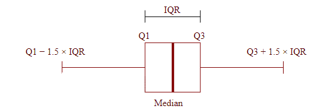
Parker:
- Nhìn giống cái nhà hai ngăn với cái hai cái hàng rào! Sao không gọi là biểu đồ nhà
mà lại gọi là biểu đồ hộp nhỉ?
Mai ghét cái vẻ cố tỏ ra vui tính của Parker. Cô nàng châm chọc:
- Chắc chỉ có anh mới xây nhà không cửa, không mái để mỗi lần vào phải bay hoặc độn thổ
như vậy! Chú ý cái đường đậm chính giữa là trung vị (median),
2 đường bên cạnh nó là phân vị thứ nhất (\(Q_1\)), phân vị thứ hai (\(Q_3\)),
và hai cái hàng rào nhà anh là hai cái giới hạn. Giới hạn dưới \(= Q_1 - 1.5 IQR\).
Giới hạn trên \( = Q_3 + 1.5 IQR\). Trong đó, interquantile range là hiệu giữa phân vị thứ
3 và phân vị thứ nhất: \(IQR = Q_3-Q_1\).
- Yên tâm đi! Nếu tôi xây nhà như vậy, nhất định là xây cho cô ở, không phải cho tôi!
Mai "hứ" một tiếng rồi tiếp:
- Đây là dữ liệu cánh bướm tôi vừa nói
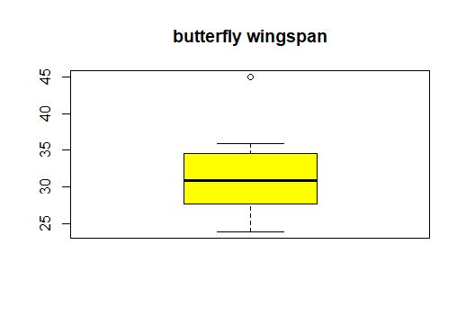
cái điểm hình tròn không nằm giữa giới hạn trên và giới hạn dưới nên nó có thể được xem
như một outlier. Nói chung, outlier là giá trị có độ lớn khác biệt hẳn so với
các giá trị khác trong dữ liệu, như thể chúng không thuộc về tổng thể này .
- Nhưng chắc trong hầu hết các trường hợp, ta chỉ cần liệng cái outlier ra khỏi dữ liệu là xong nhỉ? Thường ai quan tâm đến cái đó làm gì!
Mai trợn mắt làm một tràng:
- Nãy tôi vừa nói mà anh không nghe hả? Nếu anh chắc chắn là outlier xuất hiện do sai
sót khi thu thập dữ liệu hoặc thiết bị đo lường bị hư hỏng thì anh hoàn toàn có thể
xóa nó khỏi mẫu. Nhưng nếu không rõ nguyên nhân thì nên tìm hiểu về nguyên nhân xuất
hiện outlier trước. Nhiều khi dữ liệu đến từ những phân phối có đuôi dài (heavy-tail
distribution) thì những cái khá lớn so với những quan trắc còn lại chưa chắc đã là
outlier. Nhiều khi những cực điểm là những cái người ta phải quan tâm đến nhiều nhất!
Liệng cái gì mà liệng! Tui liệng kiến thức vào đầu anh là anh lại liệng trả! Trong
cải tiến quá trình sản xuất sợi bông và vải ở viện Shirley, thì người ta thấy rằng
một trong những vấn đề nan giải là độ chắc của một sợi cotton vừa được se. Lực cần để làm đứt một sợi cotton thì khác nhau từ sợi này qua sự khác cho dù chúng được xe dưới cùng một điều kiện. Sau khi áp dụng lực với cường độ khác nhau, Tippet xem xét sợi chỉ dưới kính hiển vi về phát hiện ra rằng việc sợi cotton có đứt hay không thì phụ thuộc vào thớ sợi yếu nhất ở bên trong nó. Đây là một ví dụ điển hình là tại sao chúng ta nên quan tâm đến distribution of the extreme (phân phối của những cực điểm). Đối với người thường, nếu họ biết được phân phối của những cực điểm dính dáng thế nào tới phân phối của những giá trị thông thường thì họ có thể dựa trên chiều cao của những đợt lũ hàng năm để dự đoán chiều cao của đợt lũ lớn nhất trong cả trăm năm. Dựa vào đó thì người ta có thể tính toán chiều cao tối ưu cho việc đắp đê ngăn lũ.
Parker chửa biết distrution là cái chi chi và hắn hơi bất ngờ trước thái
độ hung dữ của Mai nhưng vẫn tỏ ra bình thản:
- Ờ, lần này thì tôi nhớ rồi!
Nói rồi gã ta quay lưng đi, cốt để cho Mai không thấy mình làm gì rồi ngoáy bút vẽ thật nhanh
trên tờ giấy trước mặt những hình con sâu nhỏ, rồi một con sâu róm to đùng, to gấp 5 lần những
con còn lại, rồi đọc bùa chú: “This is my drawing! Turn them into real things!" Giờ Mai mới biết
là Parker giở trò với giấy hiện thực (giấy có khả năng biến mọi thứ trong tranh thì hiện thực
trong vòng một thời gian ngắn trước khi tan vào hư vô) nhưng quá trễ. Lập tức tờ giấy mỏng biến
thành hình những con sâu to gấp mười lần trong tranh bò lồm cồm trên bàn. Mai muốn nghẹt thở khi
thấy con sâu róm khổng lồ. Cô nàng đứng bật dậy, hét ầm lên “Á….” rồi bỏ chạy, quên mất là độn
thổ thì nhanh hơn. Parker cười khoái trá, hỏi vói theo:
- Sâu to như vậy thì đã được xem là outlier chưa?
Nhưng khi quay lưng đi gọi khoái trá như vậy thì anh không để ý rằng con sâu bự chảng
bò đang cố bò lên người mình. Khi quay lại, thấy nó đang bò lên thì anh chàng cũng
hét lên, hẩy mình cho nó rơi ra, rồi ... chạy nốt!!!
Bạn đọc quan tâm đến distribution of the extreme có thể tìm hiểu thêm với từ khóa Generalized extreme value distribution. E. J. Gumbel cũng có một cuốn sách về chủ đề này với tựa đề Statistics of Extremes.
Giá đỡ chổi bay (lấy mẫu)
Parker:
- Haizz! Tôi chả biết cô học thống kê làm gì?
Hồi xưa chẳng có một thời bầu cử chủ tịch bộ pháp thuật mà mấy
ông bên thống kê dự đoán là Skeropt thắng nhưng rốt cục thì Lucenberg thắng đó thôi?
- Nhưng tôi hỏi anh, cái dự báo đó được sản ra từ tờ báo nào, tỷ lệ trả lời là bao nhiêu?
Parker không biết câu trả lời chỉ biết ợm ờ. Mai mỉm cười đắc thắng:
- Không biết phải không? Bảng khảo sát và dự báo được đưa ra bởi tờ Nhật báo Lahey.
Mà ai đọc nhật báo Lahey? Đa phần chỉ có dân Lahey thôi chứ ai?
Vậy kết quả dự đoán của tờ báo đó anh tin được sao?
Parker không biết nói câu gì đành lảng sang vấn đề khác:
- Ờ, ai biết đâu!
Đọc kết quả thống kê thì nên tìm hiểu sơ qua cách người ta thực hiện nghiên cứu,
chứ cứ đọc kết quả người ta phô ra như anh thì có mà….tạch.
Các nhà lãnh đạo cấp cao mà cũng như anh thì chắc dân tình thi nhau biểu tình.
- Mai cười nhếch mép. Vẻ khinh khỉnh lộ rõ.
- Thi nhau biểu tình gì?
Cách đây nhiều năm, nhiều phù thủy gây áp lực với chính quyền, yêu cầu xây những giá đỡ chổi bay (broom rack) trên những con phố của thành phố Centura. Cơ quan chức năng đành gửi thư tới các hộ dân mời họ làm bảng khảo sát để chắc chắn là phần đông những người phải đóng thuế ủng hộ việc này. Nhưng tỉ lệ trả lời khảo sát rất thấp, và đa phần những người trả lời là những người hay đi dã ngoại hoặc những người làm công việc kinh doanh liên quan tới khóa cho chổi bay hoặc chổi bay. Dĩ nhiên, họ đều ủng hộ việc này! Nhưng khi thấy kết quả khảo sát như vậy, chính quyền đành cử người đi phỏng vấn từng hộ dân. Kết quả khảo sát mới cho ra là phần đông mọi người không có nhu cầu sử dụng giá đỡ chổi bay! Nếu chính quyền chỉ dựa vào kết quả ban đầu thì mấy người không cần giá đỡ chổi bay đã đổ ra đường biểu tình chứ sao?
- Nhưng làm sao họ biết được? Phỏng vấn tất cả mọi người à?
- Không, dại gì! Thành phố này cũng hơi thưa thớt cho nên nếu mà đi phỏng vấn ngẫu nhiên
10 người thôi thì cũng tốn rất nhiều thời gian đi từ chỗ này đến chỗ nọ. Cho nên người ta nghĩ
tới cách khác. Họ lôi bản đồ của thành phố ra, chia thành 750 phần, mỗi phần có 10 hộ gia đình.
Người ta đánh số mỗi phần từ 1 đến 750 rồi chọn ngẫu nhiên 40 phần và phỏng vấn những hộ ở trong phần đó. Cái này gọi là cluster sampling (lấy mẫu theo nhóm), thường được dùng khi các thành phần của tổng thể phân bố rải rác về mặt địa lý.
- Nói như cô, lỡ những người ở trong một phần nào đó là khá giống nhau nhưng lại khác nhiều so với những phần khác thì sao? Nếu phần đó không được chọn thì có phải là vô lý không?
- Dĩ nhiên, nếu các phần tử trong mỗi phần nhỏ là khá đều nhau so với toàn bộ tổng thể thì phương pháp này có thể trở nên bất hợp lý. Lấy thêm một ví dụ khác, khi chính quyền muốn biết dân có muốn cho xây hồ bơi tập thể không. Trong trường hợp này, các hộ giàu thường tụ lại một nơi, các hộ nghèo thường tụ lại ở một nơi khác. Như vậy, nếu dùng cluster sampling thì những nhà giàu đã có bể bơi thường sẽ trả lời là không muốn bể bơi tập thể trong thị trấn, những hộ nghèo, hộ có thu nhập trung bình thì lại muốn vì họ không có bể bơi riêng.
- Ha ha, thấy chưa?
- Thấy chưa cái gì? Có một giải pháp khác đó là lấy mẫu phân tầng (stratified sampling).
Phương pháp này thường đáng tin hơn so với lấy mẫu theo nhóm. Với phương pháp này thì chúng
ta chia các hộ dân ra thành 3 tổng thể nhỏ hơn gọi là strata. Trong trường hợp này thì 3 tổng
thể nhỏ hơn đó lần lượt là hộ có thu nhập, cao hộ có thu nhập trung bình, và hộ có thu nhập
thấp. Sau đó thì chúng ta lấy mẫu ngẫu nhiên từ mỗi tổng thể nhỏ này. Như vậy thì sẽ không
có một nhóm thu nhập nào bị thiếu. Nếu muốn chính xác hơn thì chúng ta có thể sử dụng phương
pháp “lấy mẫu phân tầng ngẫu nhiên theo tỉ lệ” (stratified random sampling with proportional
allocation). Như vậy thì mỗi strata sẽ được lấy mẫu tương ứng với tỷ lệ kích cỡ. Giả sử như hộ
có thu nhập cao chiếm 15% dân số, hộ có thu nhập trung bình chiếm 65%, và hộ có thu nhập
thấp thì chiếm 20%. Như vậy nếu chúng ta muốn lấy mẫu có kích cỡ bằng 100 thì chúng ta sẽ
chọn ngẫu nhiên 15 hộ có thu nhập cao (tức là 15% của 100), 65 hộ có thu nhập trung bình
(tức là 65% của 100), 20 hộ có thu nhập thấp (tức là 20% của 100).
Giờ thì anh thấy chưa….?
Một số lưu ý khác khi lấy mẫu
- Một trong những sai lầm khá phổ biến là không xác định tổng thể mà chúng ta quan tâm trước
khi tiến hành lấy mẫu. Sau đó, có thể lại ngoại suy ra khỏi vùng khảo sát.
Ta phải cẩn thận vì điều này cũng giống như chúng ta không thể áp dụng định luật
Newton cho cả vũ trụ, và một khi mẫu không đại diện cho tổng thể thì cỡ mẫu to
không cải thiện được tình hình. Do đó, những khảo sát có quá nhiều câu không được trả lời
thường đem lại kết quả lệch lạc so với thực tiễn (Chẳng hạn những khảo sát qua điện thoại
nhưng khi gọi điện thì tới 30% không bốc máy.
Trong 70% bốc máy chỉ có một nửa chịu tham gia khảo sát.)
- Ngay cả khi chúng ta đã xác định chính xác được tổng thể mà chúng ta muốn nghiên cứu là gì
rồi thì việc lấy được một mẫu đại diện cho tổng thể cũng là không hề dễ. Chẳng hạn trong trang trại
nuôi ếch, ta đi vồ ếch
để lấy mẫu thì chúng ta phải chọn ngẫu nhiên chứ không phải cứ con nào vồ được (tức là dễ vồ) thì
tạo thành một mẫu. Nếu làm như vậy thì mẫu này không đại diện cho tổng thể vì những con ếch khỏe hơn
thường khó bắt hơn. Mà trong những con ếch đó lại có thể có nhiều một loại hormone nào đó hơn
so với những con ếch còn lại.
Một ví dụ khác: bạn quăng lưới bắt cá để lên mẫu nhưng mắt lưới quá to. Khi đó, những con
cá nhỏ sẽ bị lọt ra khỏi lưới nên mẫu này không đại diện cho tổng thể!
- Để tránh được những yếu tố dẫn đến đến trong việc lấy mẫu thì chúng ta nên xác định các
nhân tố có thể ảnh hưởng tới kết quả nghiên cứu (giới tính, lối sống, tuổi tác,...)
Các giả thuyết cơ bản là chưa chính xác:
Làm thí nghiệm thuốc trên bệnh nhân mà trong đó đó có một số người cùng huyết thống thì các
quan sát ở đây không còn là độc lập với nhau nữa.
Nướng bánh mà chuyển lò vi sóng mới thì thì sẽ có thêm nguồn dao động (source of variation) và do đó các
quan trắc không có cùng phân phối nữa. Khi này, chúng ta phải phân tích theo dạng khối (dùng
blocking, phân tích theo block, các bạn có thể tìm hiểu về điều này trong bộ môn thiết kế thí nghiệm
(design of experiments))
- Chúng ta nên xác định những biến ngẫu nhiên cần thu thập trước khi lấy mẫu.Chẳng hạn như
khi muốn phát triển một mô hình để dự đoán cháy rừng thì chúng ta có thể thu thập những thông
tin như sức gió, nhiệt độ, độ ẩm. Ngoài ra, ta còn có thể để thu thập thông tin về loại cây
vì những loại cây chứa nhiều tinh dầu như bạch đàn thì một khi đã cháy đám cháy sẽ lan rất
nhanh.
Ví dụ về độ nghiệm
trọng của việc thu thập thiếu: độ tuổi ảnh hưởng đến response (biến đáp ứng) nhưng dữ liệu
lại cho thấy độ tuổi và biến đáp ứng có hệ số tương quan xấp xỉ 0
nếu ta không thu thập cả thông tin về giới tính. (Đọc thêm: nghịch lý Simpson (Simpson paradox).)
- Không nên phân nhóm dữ liệu quá sớm. Ta có thể làm điều này sau khi lấy mẫu.
Xem chi tiết lý do trong ví dụ về measuring device trang 28, common error in statistics.
Có một số điều khác có thể khiến nghiên cứu bị lệch lạc như sau:
- Người tham gia khảo sát trả lời đại \( \rightarrow \) cách đặt câu hỏi khảo sát là rất quan
trọng. Khi khảo sát, người thực hiện nên chú ý những rào cản xã hội có thể dẫn đến
những câu trả lời nhất định. Ví dụ: Cảnh sát hỏi dân về ý kiến của họ với mức độ hiệu quả
của bộ công an thì 95% người nói rằng thỏa mãn.
- Nghiên cứu do một đơn vị nào đó tài trợ và không báo cáo những dữ liệu cho thấy sản phẩm
có chất lượng kém hơn mong đợi
- Những đơn vị thí nghiệm được sử dụng trong treatment (phép thử) ít quan trọng hơn thì thường
ít được chú tâm, ít được kiểm soát hơn.
Kết quả khảo sát, sau khi được công bố nhiều khi cũng có thể có những ảnh hưởng khá
thú vị: Hồi xưa, ông Trump và bà Clinton tranh cử thì khảo sát cho thấy xác suất bà Clinton
thắng là áp đảo so với ông Trump. Sau khảo sát, bạn tôi nghĩ là chắc bà Clinton thắng nên
không đi bầu cử (lý do là bên này quá trình tham gia bầu cử hơi phức tạp). Xong, ông Trump
thắng, bạn tôi lại hối hận là đã không đi bầu cho bà Clinton.
Biến ngẫu nhiên và định nghĩa cổ điển của xác suất
Vẫn phải đi dạy, dù vẫn bực, Mai nhìn Parker hầm hầm như sắp xử trảm tên ấy. Cô nàng đanh giọng nói:
- Hôm nay chúng ta nói về biến ngẫu nhiên. "Biến" là biến đổi, "ngẫu nhiên" là không có ...không ngẫu nhiên!!!
Một biến ngẫu nhiên, thường được kí hiệu là X là một biến có giá trị là kết quả của một hiện tượng
ngẫu nhiên. Ví dụ như giới tính người yêu anh có thể là nữ, nam, hoặc đồng giới! Biến này gọi là
biến phân loại (categorical variable) vì nó có thể là một trong 3 loại: nữ, nam, hoặc đồng giới!
Số lần người đó đi chơi với anh có thể được xem như biến rời rạc (discrete random variable)
vì ta có thể liệt kê tất cả các giá trị của nó! Nhưng chiều cao, cân nặng của họ thì là biến
liên tục.
- Giới tính người yêu tôi có thể là nữ, nam, hoặc đồng giới? Ý cô là tôi lưỡng tính hả?
Mai gờm gờm:
- Tôi chỉ đoán thôi!
Để xoa dịu cơn giận của Mai, Parker cười đùa:
- Không sao! Nếu vậy thật thì càng có nhiều lựa chọn!
Mai buột miệng cười, nhưng mau chóng ghìm lại, vì cô nàng vẫn chưa hết cáu về vụ mấy con sâu bữa trước. Parker nhớ lại chuyện hôm trước, nhưng cũng không lấy gì làm nhọ, vì Mai không biết rằng anh chàng cũng chạy mất dép, mấy tiếng sau mới quay lại. Về chuyện chạy mất khi con sâu cố bò lên, lão tự bào chữa với lòng rằng mình không sợ con sâu, mà chỉ là ... sợ nó bò lên người!!!
Mai:
- Lấy ví dụ khác: lượng hàng bán được của "Baker Boy" qua các tháng là biến rời rạc. Đó có thể là một triệu sản phẩm, 1 triệu hai trăm sản phẩm, hoặc hai triệu sản phẩm, tức là đếm được. Nhưng doanh thu của họ qua mỗi tháng là biến ngẫu nhiên liên tục.
- Ô kê! - Parker cười, giống như là đi học vui lắm!!
Mai lườm nó:
- Giờ tôi hỏi anh, giới tính của cá là biến phân loại hay biến liên tục?
Parker thản nhiên đáp:
- Dĩ nhiên là liên tục!
Mai mặt hầm hầm, chuẩn bị tuôn cơn giận. Nhưng Parker biết rẽ lái tức thì:
- Đùa thôi! Biến phân loại! Cô vừa nói giới tính người yêu tôi là biến phân loại xong! Giới tính của cá làm sao liên tục được!
Mai kiềm lại lửa trên đầu, hỏi tiếp:
- Vậy chiều dài con cá là biến ngẫu nhiên liên tục hay rời rạc!
Parker:
- Liên tục!
Mai:
- Số lông trên tay anh là biến ngẫu nhiên liên tục hay rời rạc?
Biết cô nàng chê mình lắm lông, Parker đổi mặt sang hơi hầm hầm:
- Đếm được, nên rời rạc!
Mai:
- Mà nhân tiện, anh có biết hiện tượng người mọc nhiều lông có tên khoa học là gì không?
Parker bắt đầu gờm gờm:
- Không!
Mai thản nhiên nói, không nhìn mặt nó, không cười (nhưng thực ra là đang nhịn cười):
- Hiện tượng ... lại tổ!
Mai e hèm một cái rồi tiếp:
- Không gian mẫu hay không gian mẫu toàn thể, thường được ký hiệu là \(\Omega\), của một thí nghiệm hay thử ngẫu nhiên là tập hợp tất cả các kết quả có thể xảy ra. Ví dụ, trong thí nghiệm tung một đồng xu,
không gian mẫu sẽ là \(\{ngửa, sấp\}\). Còn đối với thí nghiệm tung một con xúc xắc thì không gian mẫu
là \(\{1, 2, 3, 4, 5, 6\}\). Bất kì tập hợp con nào của không gian mẫu đều thường được gọi là một biến cố. Như vậy, một biến cố (event) là một tập các kết quả đầu ra (outcomes). Chẳng hạn,khi tung một con xúc xắc thì \(\{1\}, \{2\},\{1,2\}, \{1, 2, 3, 4, 5, 6\}\) đều là biến cố.
Theo định nghĩa cổ điển của lý thuyết xác suất thì xác suất \(P(E)\) của một biến cố \(E\) được định nghĩa là \(P(E)=\frac{n}{N}\). Trong đó, n là tổng số outcome có khả năng xảy ra như nhau, n là số lần biến cố
E xảy ra. Nói cách khác, người ta định nghĩa xác suất xảy ra của một biến cố bằng tần suất nó xảy ra. Như vậy thì rõ ràng xác suất của một biến cố luôn nằm giữa 0 và 1
\((0\le P(E)\le 1\forall \Omega)\). Ví dụ khi thảy một đồng xu cân bằng thì xác suất mặt ngửa
là \(P(\text{ngửa})=\frac{1}{2}\).
Rồi Mai lại tiếp tục giở một cái giọng rất ... Mai:
- Một ví dụ khác gần gũi hơn như nếu xác suất anh bắn tên trúng bia tâm bia đỡ là 0.2 thì về lâu về dài, khi anh bắn càng nhiều tên thì trung bình cứ mười lần chỉ trúng có hai lần! Khi anh đi săn tập thể, muông thú sẽ rất biết ơn anh vì thay vì để người thạo săn bắn hạ gục con thú, anh sẽ giành cơ hội để thể hiện mình nhưng cuối cùng bắn không trúng và để cho con thú nó chạy mất!
Parker biết là Mai đã đã nhìn thấy mình tập bắn tên. Mặt nó hầm hầm, vừa tức vừa xấu hổ. Mai mặc kệ:
- Nếu điều gì có xác suất nó xảy ra bằng 1 thì chắc chắn điều đó sẽ xảy ra. Ví dụ: Để ước đoán khả năng anh sẽ thay bạn gái trong vòng một tháng tới, tôi sẽ ước tính xác suất của biến cố
E: "anh thay bạn gái trong vòng một tháng". Nhưng nghe đâu, anh chưa có mối tình nào kéo dài quá một tháng nên biến cố E
này dĩ nhiên có xác suất bằng 1. Nếu điều gì có xác suất nó xảy ra bằng 0 thì chắc chắn
điều đó sẽ không xảy ra. Ví dụ, anh thông minh hơn tôi là một điều có xác suất xảy ra bằng 0,
tức là đây là điều không thể xảy ra!
Parker nghe rất tức nhưng không làm được gì vì những điều Mai nói không có cái gì là sai!!!
2b.Các công thức cơ bản của xác suất
\( P(\Omega/A)=1-P(A)\). Nghĩa là, xác suất mà một biến cố A sẽ không xảy ra,
tức là \(P(\Omega/A)\) bằng 1 trừ đi xác suất nó sẽ xảy ra. Ví dụ như xác suất
ngày mai trời nắng sẽ bằng 1 trừ đi xác suất ngày mai trời không nắng.
Quy tắc cộng xác suất: \(P(A\cup B)=P(A)+P(B)-P(A\cap B)\,\). Nghĩa là, xác suất A hoặc B sẽ xảy ra bằng tổng xác suất A sẽ xảy ra với xác suất B sẽ xảy ra, trừ đi xác suất mà cả A và B cùng xảy ra.
Để nhớ các công thức cơ bản của xác suất, anh có thể liên tưởng tới việc cộng diện tích
của những hình chồng lên nhau:
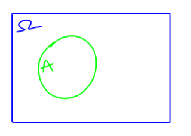
Ta xem không gian mẫu như hình chữ nhật có diện tích bằng một, biến cố \(A\) là hình tròn, và xác suất của một biến cố bằng diện tích của phần tương ứng với nó. Như vậy \(P(\Omega )=1\) (diện tích hình chữ nhật là 1). Nghĩa là, xác suất một biến cố sơ cấp nào đó trong tập mẫu sẽ xảy ra là 1.
Nói nôm na thì xác suất của tất cả những khả năng có thể xảy ra là 1.
Xác suất \(A\) xảy ra là diện tích của vòng tròn \(A\). Như vậy, xác suất \(A\) không xảy ra là phần diện tích bên ngoài \(a\), tức là \(1-P(A)\).
\(P(A\cup B)\) là diện tích của phần bị gạch chéo trong hình:
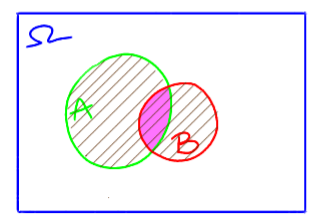
Nhưng ta lại thấy rằng diện tích phần hình gạch chéo (\(P(A\cup B)\)) bằng diện tích đường tròn xanh \(P(A)\) cộng diện tích đường tròn đỏ (\(P(B)\))
trừ đi diện tích phần màu hồng (\(P(A\cap B)\)). Như vậy, tóm lại thì
\(P(A\cup B)=P(A)+P(B)-P(A\cap B)\,\). Đơn giản không?
Parker:
- Đơn giản!
Mai búng tay một cái, mọi thứ đã viết biến mất khỏi mặt giấy. Cô nàng thách đố Parker:
- Đơn giản thì viết lại các công thức cho tôi!
Parker vẽ hình. Nhưng hắn ngoáy ra hai cái vòng tròn rời nhau:
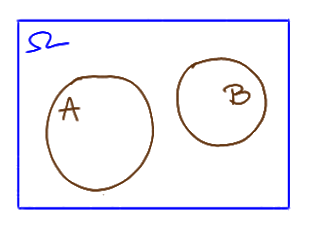
Mai la oai oái
- Anh vẽ hai cái vòng tròn mà rời nhau như vậy thì thành biến cố xung khắc (mutually exclusive events) rồi còn gì!!
Rồi Mai lắc đầu:
- Đơn giản như vậy mà cũng làm không xong!
Parker quạu:
- Xung khắc gì? Cô xung khắc với tôi á?
Mai thè lưỡi, chẳng để tâm:
- Hai biến cố A và B được gọi là xung khắc nếu chúng không đồng thời
xảy ra trong một phép thử. Ví dụ 13: Tung một con xúc xắc, gọi \(a\) là biến cố xúc xắc xuất hiện mặt hai chấm,
B là biến cố xúc xắc xuất hiện mặt 3 chấm thì A,B xung khắc.
Nếu \(A,B\) là hai biến cố xung khắc thì \(P(A\cup B)=P(A)+P(B)\) . Một ví dụ khác là anh đi câu. Gọi \(A\) là biến cố lần đầu giật câu anh câu được tôm, B là biến cố lần đầu giật câu anh câu được cá. Như vậy thì đây là hai biến cố xung khắc.
Parker:
- Cô nói vậy là sai rồi!
Mai tròn mắt ngạc nhiên.
Parker đắc trí:
- Biến cố lần đầu giật câu tôi câu được tôm, và biến cố lần đầu giật câu tôi câu được cá là hai biến cố không xung khắc.
- Tại sao?
- Tại lúc tôm cắn câu thì một con cá có thể nhào tới đớp con tôm đó. Đúng lúc đó,
tôi kéo cần câu, như vậy chẳng phải sẽ bắt được cả cá lẫn tôm hay sao?
Haizz. Cá lớn đớp...tôm bé! Lần này Mai vặn lại không được, nên cô nàng đánh trống lảng ngay
lập tức:
- Thôi được rồi! Tôi không để ý chi tiết đó! Nhưng anh phải nhớ là khi vẽ phải vẽ hai đường tròn
chồng nên nhau
Ghi chú: Nếu A là một biến cố thì phần bù của A, tức là \(\Omega/A\) là biến cố mà \(A\) không
xảy ra, kí hiệu là \(A^c\) hoặc \(\overline{A}\) Ta lại có \(P(A+A^c)=1\) mà \(A\), \(A^c\) rõ ràng
là hai biến cố xung khắc, nên \(P(A)+P(A^c)=1\). Như vậy, \(P(A^c)=1-P(A)\).
Ta biết rằng nếu A, B là hai biến cố xung khắc thì \(P(A\cup B)=P(A)+P(B)\). Tổng quát hơn, ta cũng có:
Nếu ta có một chuỗi đếm được bất kỳ gồm các biến cố đôi một không giao nhau
\( E_{1},E_{2},...\) thì \(P(E_{1}\cup E_{2}\cup \cdots )=\sum P(E_{i})\). Nghĩa là, xác suất
của một tập biến cố là hợp của các tập con không giao nhau bằng tổng các xác suất của các tập
con đó. Điều này không đúng nếu có hai tập con giao nhau.
Truyện ngụ ngôn xứ Baltimore
Ngày xửa ngày xưa, ở xứ Baltimore, có một người tên là X nhận được một bức thư lạ từ một
nhà môi giới chứng khoán. Trong đó, người ta tiết lộ rằng có một cổ phiếu sẽ tăng mạnh
trong tuần tới. Một tuần trôi qua! Đúng như lời dự đoán, cổ phiếu ấy tăng ngất ngưởng!
Tuần tiếp theo, X lại nhận được một bức thư mới từ nhà môi giới này. Tuy nhiên, lần này họ
dự đoán là một cổ phiếu nào đó sẽ rớt giá mạnh trong tuần tới. Quả thực đúng vậy!
Và cứ như vậy, liên tiếp 10 tuần, và tuần nào lời dự đoán trong thư cũng trở thành
hiện thực.
Sang tuần thứ 11, bạn nhận được một lời mời đầu tư với nhà mô giới trên. Đi kèm với
đó là số tiền môi giới khổng lồ cho khả năng dự đoán chính xác như được thể hiện
trong 10 tuần vừa rồi qua thư.
Nghe cũng khá hấp dẫn nhỉ? Nhưng thực ra chuyện này gần như không thể xảy ra. Thực ra, mỗi tuần,
nhà môi giới nọ đã gửi 1024 lá thư đến những người khác nhau để lừa đảo.
Chiêu trò là như vậy: Giả sử xác suất dự đoán chính xác giá một cổ phiếu lên hoặc xuống
là 50% thì chuyện này giống như thảy đồng xu mười lần cho mỗi người anh ta gửi thư tới.
Xác suất dự đoán đúng cho tuần thứ nhất là 1/2. Lần dự đoán của tuần thứ 2 là độc lập
với tuần thứ nhất nên xác suất dự đoán đúng cho tuần thứ hai là 1/2. Lần dự đoán của tuần thứ ba là độc lập
với tuần thứ nhất và thứ hai nên xác suất dự đoán đúng cho tuần thứ ba là 1/2... Như vậy,
xác suất dự đoán đúng 10 lần liên tiếp là
$$\frac{1}{2}\times \frac{1}{2}\times....\times\frac{1}{2}=\left(\frac{1}{2}\right)^{10}=\frac{1}{1024}$$
Như vậy, mỗi tuần, anh ta chỉ cần gửi 1024 lá thư đi thì trong đó chắc chắn sẽ
có 1 người nhận được thư mà có dự đoán đúng 10 tuần liên tiếp!
Mụ mèo chửa (Hàm khối xác suất, phân phối Bernoulli, phân phối tích lũy)
Mai đố Parker:
- Giả sử mèo nhà anh chuẩn bị sinh bốn con thì liệu khả năng
sinh hai đực hai cái là cao nhất hay ba đực một cái, hay ba cái một đực?
Parker đoán mò:
- Chắc không phải hai đực hai cái!
- Tại sao?
- Đực và cái nghe có vẻ có vai trò ngang nhau nhưng nếu là
hai đực hai cái thì chắc cô đã không đố!
Mai cười:
- Chắc không?
Nhìn mặt Mai lúc này, Parker lại nghĩ lại "Có khi nào
cô ta tương kế tựu kế để lỡm mình không? Có khi nào hai đực hai cái không nhỉ?".
Trước khi Parker kịp nói gì, Mai châm chọc:
- Đoán mò mà cũng nói! Sao anh không đặt bút xuống tính xem
xác suất của cái nào cao hơn?
Parker bắt đầu viết:
- Có bốn con thì thứ tự giới tính có thể xảy ra là đực đực đực
đực, đực đực đực cái, đực đực cái cái, đực đực cái đực,...
Chưa gì Mai đã càu nhàu:
- Đực đực cái cái như thế thì đến khi nào mới xong? Sao anh
không kí hiệu con đực là 1, con cái là 0, như vậy có phải nhanh hơn không?
- Ừ nhỉ! Như vậy thì những khả năng có thể xảy ra là:
Như vậy xác suất 3 đực một cái hoặc 3 cái một đực là
\(\frac{4}{16}+\frac{4}{16}=\frac{1}{2}\) nhưng xác suất 2 đực 2 cái là
\(\frac{6}{16}=\frac{3}{8}\). Như vậy khả năng 3 đực một cái hoặc 3 cái một đực
cao hơn so với 2 đực 2 cái.
Mai không nói gì, chỉ đằng hắng, kiểu đồng ý nhưng không muốn
nói là đồng ý. Xong cô nàng nói:
- Trong thực tế có rất nhiều biến ngẫu nhiên nhận hai giá trị
kiểu này. Chẳng hạn như thi đấu có thể thắng hoặc thua, trăng lên hay không lên
vào buổi tối,...Khi đó, ta mô hình nó bằng mô hình phân phối Bernoulli. Để hiểu
điều này, trước tiên, anh cần hiểu về phân phối xác suất. Đối với biến ngẫu
nhiên rời rạc, người ta quan tâm đến xác suất để biến ngẫu nhiên đó nhận tương ứng
từng giá trị \( x\in D\), hay \(\mathbf {P} (X=x)\). Giả sử \( X:\Omega \to D\). Người
ta đặt tên cho tương ứng xác suất này là hàm khối xác suất , kí hiệu
\( p_{X}(x)=\mathbf {P} (X=x) \forall x\in D\).
Vì hàm khối xác
suất cũng là một xác suất, nó phải thỏa mãn
\(0\le p_{X}(x)\le 1 \;\forall x\in D\) và \(\sum _{x\in D}{p_{X}}(x)=1\)
Quay lại với mô hình Bernoulli.Phân phối Bernoulli, kí hiệu \(\text{Bernoulli}(p)\) là một phân phối xác suất rời
rạc của biến ngẫu nhiên chỉ nhận hai giá trị 0 hoặc 1 trong
đó giá trị 1 đạt được với xác suất \(p\) (ta thường xem như xác suất thành công)
và giá trị 0 đạt được với xác suất \(q=1-p\) (thường được xem là xác suất
thất bại). Kí hiệu: \(X\sim \text{Bernoulli}(p)\) (X có phân phối \(\text{Bernoulli}(p)\)) , và ta sẽ có:
\(\mathbf{P} (X=1)=1-\mathbf{P} (X=0)=1-q=p.\)
Nhưng mèo nhà anh đẻ những bốn con, cứ không phải một con.
Giới tính của mỗi mèo con có thể được xem như độc lập với nhau. Do đó, ta sử dụng
mô hình nhị thức (binomial distribution) thay
cho mô hình Bernoulli. Phân phối nhị thức \(Binom(n,p)\)
có hàm phân phối xác suất
$$\mathbf{P} (X=k)={n \choose k}p^{k}(1-p)^{n-k}\quad {\mbox{với}}\ k=0,1,2,\dots ,n$$
Trong đó,\({n \choose k}=\frac {n!}{k!(n-k)!}\) và k là số lần thành công trong n lượt thử.
Công thức trên có thể được hiểu như sau: xác suất xảy ra k
lượt thử thành công là \( p^{k}\) và xác suất xảy ra \((n-k)\) lượt thử không thành
công là\( (1-p)^{n-k}\). Ngoài ra, vì k lượt thử thành công có thể được phân bố
bất kỳ trong n lượt thử nên số cách phân bố k lượt thử thành công trong n
lượt thử liên tiếp là \(\binom {n}{k}\).
Để hiểu ý nghĩa của phân phối nhị
thức, ta có thể liên tưởng đến việc thảy một đồng xu n, tức là thực hiện một
phép thử n lần, mỗi lần thử là độc lập với nhau. Xác suất nhận được mặt ngửa
trong mỗi lần thảy là p. Như vậy thì tổng số lần được mặt ngửa trong n
lần thảy là
$$\mathbf{P} (X=k)={n \choose k}p^{k}(1-p)^{n-k}\quad {\mbox{voi}}\ k=0,1,2,\dots ,n$$
- Nghe giống như lặp lại mô hình Bernoulli n lần?
- Đúng vậy! Nếu ta có \(X_1,...,X_n\sim \text{Bernoulli}(p)\)
thì \(\sum_{i=1}^{n}X_i\sim Binom(n,p)\)
Đối với câu đố tôi vừa hỏi anh thì có bao nhiêu lượt thử?
- 4
- Như vậy n = 4. Xác suất thành công là bao nhiêu?
- \(p=\frac{1}{2}\) vì khả năng sinh con đực hay con cái là
như nhau!
- Không hoàn toàn đúng nhưng tạm coi như vậy đi, vì chúng ta
không xem xét các yếu tô di truyền nên có thể xem như khả năng sinh đực và cái
là bằng nhau và bằng \(\frac{1}{2}\).
- Như vậy thì khả năng sinh 2 đực 2 cái có thể được tính trực
tiếp qua hàm phân phối xác suất:
$$P(X = 2) = {n\choose k}p^{k}(1-p)^{n-k} = {4 \choose 2}\left(\frac{1}{2} \right )^{2}(1-\frac{1}{2})^{4-2} = \frac{3}{8}$$
Xác suất sinh 1 đực 3 cái:
$$P(X = 1) = {n \choose k}p^{k}(1-p)^{n-k} = {4 \choose 1}\left(\frac{1}{2} \right )^{1}(1-\frac{1}{2})^{4-1} = \frac{1}{4}$$
Xác suất sinh 3 đực 1 cái:
$$P(X = 3) = {n \choose k}p^{k}(1-p)^{n-k} = {4 \choose 3}\left(\frac{1}{2} \right )^{3}(1-\frac{1}{2})^{4-3} = \frac{1}{4}$$
- Vậy xác suất sinh nhiều nhất 2 đực là:
$$P(X\le 2)=P(X=0)+P(X=1)+P(X=2)=\frac{1}{16}+\frac{3}{8}+\frac{1}{4}?$$
- Đúng rồi! Nhưng chúng ta cũng có thể tính trực tiếp xác suất này bằng cách
sử dụng hàm phân phối tích lũy (Cumulative distribution function, viết tắt: CDF) .
Với mỗi số thực x, hàm phân phối tích lũy được định nghĩa là
xác suất mà biến ngẫu nhiên X lấy giá trị nhỏ hơn hay bằng x, tức là:
$$F_X(x)=P(X\leq x)$$
Người ta chứng minh được phân phối nhị thức có hàm phân phối tích lũy là
$$F_X(k)=P(X\leq k)=\sum _{i=0}^k{\binom {n}{i}p^{i}(1-p)^{n-i}}$$
Vậy xác suất sinh nhiều nhất 2 đực là:
- Nhưng nếu tôi muốn biết xác suất sinh được từ 2 đến 3 con đực thì sao?
- \(P(2\le X\le 3)= P(X\le 3)-P(X<2)\) đúng không? Tại vì \(\{2\le X\le 3\}\) và \(\{X<2\}\) là 2
biến cố rời nhau, mà điều này có nghĩa là
\(P(2\le X\le 3)+P(X<2)=P(\{2\le X\le 3\}\cup\{X<2\})=P(X\le 3)\)!
Như vậy,
$$P(2\le X\le 3)= F_X(3)-F_X(1)$$
mà $$F_X(1)= P(X=0)+P(X=1)= \frac{1}{16}+\frac{3}{8}=\frac{7}{16}$$
Thấy Mai viết thẳng liên tiếp như không cần dừng, Parker hỏi:
- Cô đọc bài này trước khi đi dạy hả?
Mai:
-Không! Não tôi đâu có chậm như anh!
Parker:
- Xạo! Vậy sao cô tính được
$$\sum _{i=0}^3{\binom {4}{i}}\left(\frac{1}{2} \right )^{i}\left(1-\frac{1}{2} \right )^{4-i}=\frac{15}{16}$$
nhanh như vậy?
Mai:
- Tôi đâu có tính! Chả qua \(F_X(3)=P(X\le 3)=1-P(X>3)=1-P(X=4)=1-\frac{1}{16}=\frac{15}{16}\),
nhẩm cho lẹ, tính làm gì?
Bài tập:
1.Một bài kiểm tra trắc nghiệm có 5 câu hỏi, mỗi câu 4 lựa chọn nhưng chỉ có 1
đáp án đúng. Giả sử câu nào bạn cũng đoán mò thì xác suất đoán đúng ít nhất 3 câu
là bao nhiêu? (đáp án: 0.104)
2. Giả sử trong số những người có sinh nhật được tổ chức năm ngoái thì 21% là được bạn bè hoặc người thân
tổ chức cho. Bạn chọn ngẫu nhiên 10 người có sinh nhật được tổ chức thì xác suất có
nhiều nhất 3 người được bạn bè tổ chức sinh nhật cho là bao nhiêu? (đáp án: 0.861)
xác suất có
ít nhất 4 người được bạn bè tổ chức sinh nhật cho là bao nhiêu?(đáp án: 0.139)
Kỳ vọng
Trong khi chờ Parker về, Mai không biết làm gì nên lôi đồng tiền cổ ra mân mê
rồi thảy xem nó có cân bằng hay không.
Một lúc sau, Parker đi vào, thấy Mai vẫn đang thảy đồng xu thì liền kiếm chuyện để
câu giờ, đỡ phải học:
- Sao người ta luôn cho rằng là xác suất nhận được mặt sấp và
mặt ngửa khi thảy đồng xu là 1/2 nhỉ? Tôi thấy hai mặt của một đồng xu thường đâu có
giống nhau đâu?
Mai chỉnh lại:
- Thì người ta đâu có giả thuyết vậy đâu! Họ giả thuyết là xác suất nhận được mặt sấp và
mặt ngửa khi thảy một đồng xu cân bằng là 1/2!
Parker đơ một tẹo, xong rồi lại lặn ra được thứ khác để hỏi:
- Vậy đồng xu trong tay cô thì sao? Cân bằng không? Hay là mình thảy để
ước lượng thử đi!
Mai thừa biết Parker muốn câu giờ. Nó lườm:
- Tôi chờ anh nãy giờ, thảy được 50 lần rồi! Ước lượng được là xác suất mặt ngửa
là 0.7! VÀO HỌC!
Mai:
- Giả sử chúng ta thảy đồng xu này, nếu ngửa thì anh đưa cho tôi 1 tờ giấy hiện thực,
nếu xấp thì tôi đưa cho anh 2 tờ. Như vậy, nếu chơi trò này thì anh liệu có lời không?
Parker:
- Cứ cho xác suất mặt ngửa là 0.7 thì trong 100 lần thảy, tôi sẽ được khoảng 70 lần mặt ngửa nên
tôi phải đưa cô 70 tờ giấy hiện thực. Nhưng cũng sẽ có khoảng 30 lần mặt xấp nên cô phải đưa tôi 60
tờ. Như vậy tôi lỗ 10 tờ nên trò này tôi không chơi đâu!
Mai cười:
- Như vậy trung bình mỗi lần thảy anh được bao nhiêu tờ?
Parker:
- Lỗ thì có! \(\frac{-10}{100}=-\frac{1}{10}\)
Mai:
- Tôi có thể gom những phép tính anh đã làm như sau:
$$\frac{0.7 \times 100 \times (-1) +0.3 \times 100 \times 2}{100}= 0.7 \times (-1) +0.3\times 2 = -0.1$$
Có một cách ngắn hơn để trả lời câu hỏi này. Đó là sử dụng khái niệm kỳ vọng.
Nếu X là một biến ngẫu nhiên rời rạc với các giá trị \(x_1,x_2,...\) và các xác suất tương ứng
là \(p_1,p_2,...\) với tổng bằng 1, thì kỳ vọng, kí hiệu là \(\mathrm {E} [X]\) hoặc \(\mu\)
chính là trung bình tổng thể và
$$ \mathrm {E} [X]=\sum _{i}p_{i}x_{i}\,$$
Như vậy, quay trở lại câu hỏi hồi nãy, thì nếu gọi X là số giấy anh có được sau mỗi lần thảy
thì xác suất anh được 2 tờ bằng xác suất mặt sấp bằng 0.3, xác suất anh mất 1 tờ bằng xác suất mặt
ngửa và bằng 0.7. Như vậy, trung bình mỗi lần thảy anh được
\(\mu=0.3\times 2 + 0.7 \times (-1)=-0.1\)
Chúng ta ước lượng trung bình tổng thể (kỳ vọng) bằng trung bình mẫu. Như vậy, nếu trong
mẫu có các giá trị \(-1 \;\;\; -1 \;\;\; -1 \;\;\;....\;\;\; 2\;\;\; 2\) trong đó có 70 số -1, 30 số 2
thì trung bình mẫu là \(\frac{-1+-1+...+-1+2+...+2}{100}=-0.1\)
Trung bình mẫu là ước lượng không chệch của trung bình tổng thể (kỳ vọng). Tức là
\(E(\overline{X})=\mu\). Sau này học luật số lớn thì anh sẽ thấy, điều này có nghĩa là khi chúng ta
thu thập càng nhiều dữ liệu thì trung bình mẫu sẽ tiến càng gần đến trung bình tổng thể (kỳ vọng)
Một số tính chất cơ bản của kỳ vọng: Với hai biến ngẫu nhiên \(X\) và Y bất kỳ (được định nghĩa trên cùng một
không gian xác suất) và hai số thực bất kỳ \(a,b\):
Giả sử tôi có dữ liệu về độ bền của bánh xe (tính theo nghìn km) như sau:
$$64\;\; 70\;\; 75 \;\; 78 \;\; 80 \;\; 90 \;\; 101$$
Khi đó, trung bình mẫu \(\overline{x}\) cho ta biết trọng tâm của dữ liệu nằm ở đâu.
Nhưng để biết được dữ liệu dao động thế nào quanh trung bình mẫu thì anh làm gì?
Parker:
- Tính hiệu giữa điểm chúng ta đang quan tâm và trung bình mẫu.
Mai:
- Có lý, nhưng nếu nói như anh thì để biết \(x_i\) lệch đi bao nhiêu so
với trung bình mẫu, chúng ta tính \(x_i-\overline{x}\), phải không?
Parker:
- Đúng rồi!
Mai:
- Nhưng mà như vậy thì tổng của tất cả những độ lệch này là \(\Sigma_i(x_i-\overline{x})=0!!\)
Parker:
- Vô đối quá vậy! Vậy tôi lấy giá trị tuyệt đối, dùng \(|x_i-\overline{x}|\)
thay cho \(x_i-\overline{x}!\)
Mai:
- Ý cũng được đấy! Nhưng giá trị tuyệt đối thì không lấy đạo hàm được, mà để
giảm độ dao động của các điểm xung quanh trung bình, chúng ta lại muốn dùng đạo hàm!
Parker thở dài:
- Chứ cô muốn sao?
Mai:
- Lấy bình phương độ lệch! Cụ thể hơn, chúng ta dùng khái niệm
phương sai mẫu (phương giống trong "bình phương",
sai giống trong "độ sai lệch"), kí hiệu là \(s^2\). Phương sai của mẫu \( (x_{1},\dots ,x_{n})\) chính là tổng các bình phương độ chệch
chia cho \(n-1\): \(s^2=\frac{\sum_{i=1}^n(x_i-\overline{x})^2}{n-1}\)
- Sao không chia cho n mà lại chia cho \(n-1\)?
- Chia cho \(n-1\) vì người ta chứng minh được \(s^2=\frac{\sum_{i=1}^n(x_i-\overline{x})^2}{n-1}\)
là một ước lượng không chệch (unbiased) của phương sai quần thể,
tức là \(E(s^2)=\sigma^2\). \(n-1\) là bậc tự do (degree of freedom).
Lý do nó có cái tên này là vì tổng các độ chệch (deviation) \(x-\overline{x}\) luôn bằng 0.
Do đó, nếu ta biết \(n-1\) cái deviation thì ta có thể tính được cái độ chệch (deviation) còn lại.
Parker:
- Như vậy thì phải gọi là bậc tù túng mới đúng chứ!
Mai:
- Để tính toán nhanh phương sai mẫu thì người ta thường dùng công thức sau:
$$s^2= \frac{\sum_{i=1}^n(x_i-\overline{x})^2}{n-1} = \frac{\sum_{i=1}^n x_i^2-n\overline{x}^2}{n-1} = \frac{1}{n-1}\left(\sum_{i=1}^nx_i^2-\frac{(\sum_{i=1}^nx_i)^2}{n}\right)$$
Giờ anh tính thử phương sai của mẫu dữ liệu tuổi thọ bánh xe trên xem!
Parker:
- $$\overline{x}=\frac{64 + 70 +75+ 78+ 80+ 90+ 101}{7}=79.71429$$
Mai:
- Trong ví dụ này, nếu ta gọi X là biến ngẫu nhiên biểu thị độ tuổi của
bánh xe thì \(\sigma^{2}\) là một ước lượng cho Variance của X. Chúng ta kí hiệu phương sai
của nó là
\({var} (X), \sigma_{X}^{2}\), hoặc \( \sigma ^{2}\), và
ta định nghĩa phương sai là giá trị kỳ vọng của bình phương của
độ lệch của X so với giá trị kỳ vọng của nó, tức là \(\sigma_{X}^{2}=E(X-\mu_X)^2\).
Mai:
- Như vậy, giả sử chúng ta có \(X\sim Ber(p)\) thì phương sai của nó là gì?
Parker:
$$\sigma_{X}^{2}=E(X-\mu_X)^2 = 0\times P(X=0)+1\times P(X=1) = p$$
Mai:
- Có một số tính chất cần phải biết như sau:
Nếu \(a\) và \(b\) là các hằng số thực, X là một biến ngẫu nhiên, thì \(aX+b\) cũng là biến ngẫu
nhiên với phương sai là: \(Var(aX+b)=a^{2}Var(X).\) Như vậy, \(Var(X+b)=Var(X)\),
cũng giống như dao động của con lắc vậy, nếu anh dịch chuyển vị trí của con lắc 1 đoạn \(b\)
thì độ dao động của nó không đổi.
Khi tính phương sai, để thuận tiện ta thường dùng công thức:
$$ Var(X)= {E} (X^{2})-\mu_X^2.$$
$$Var (aX+bY)=a^{2}Var (X)+b^{2}Var (Y)+2ab Cov (X,Y).$$
Parker:
- Haizz! Sinh ra mấy cái này làm gì, để cho người ta phải học!
Mai:
- Dĩ nhiên phải học! Trong sản xuất, đầu ra sản phẩm là một đại lượng biến động.
Nếu phương sai quá cao thì độ bền của sản phẩm bị dao động rất mạnh.
Khi một công ty công bố bánh xe của họ có độ bền 80000 km thì không phải cái bánh xe nào
cũng hư sau khi đi 80000km.
Nó biến đổi do rất nhiều yếu tố như nguyên liệu đầu vào, máy móc, nhân lực,...
Về phía người tiêu dùng, nếu nó hư sau khi đi được 100000 km thì họ mừng, khỏi nói!
Nếu nó hư sau khi đi được 75000km thì họ cũng
có thể chấp nhận và cho rằng mình đi trên đường gồ ghề,... nên bánh xe mau bị hư hơn.
Nhưng nếu mới đi được 40 000 km đã hư thì tệ quá! Cái mà người tiêu dùng trông chờ
không phải là một sản phẩm hoàn hảo mà là một sản phẩm đáng tin cậy.
Họ muốn sản phẩm với độ dao động trong chất lượng
thấp để từ đó họ biết đường kỳ vọng điều gì từ sản phẩm đó. Điều này có nghĩa là
trong sản xuất, anh muốn tìm cách để giảm Variance!
Sau này học ANOVA thì anh sẽ thấy ANOVA cho phép chúng ta chia tách nguồn của những sự dao động
này ra làm hai thành phần chính. Cụm thứ nhất gồm những nguyên nhân tự nhiên
như con người,
nguồn cung,... mà chúng ta không làm gì được. Cụm thứ hai bao gồm những nguyên nhân đặc biệt
thì rất dễ xác định. Để cải thiện quy trình sản xuất, ta có thể xem dây chuyền sản xuất như
là một chuỗi các hoạt động, bắt đầu với nguyên liệu thô và kết thúc với sản phẩm.
Mỗi hoạt động này đều có thể đo lường và có độ dao động do những yếu tố tự nhiên mà
chúng ta không kiểm soát được, và những yếu tố đặc biệt mà chúng ta có thể đưa ra
phương án giải quyết. Thay vì chờ đợi cho những sản phẩm cuối cùng vượt quá giới hạn
về độ dao động thì người ta xem xét độ dao động của mỗi hoạt động trong dây
chuyền sản xuất. Hoạt động có độ dao động lớn nhất nên được xem xét và cải thiện để
có được độ dao động nhỏ hơn. Độ dao động đó được giảm thì sẽ có một hoạt động khác dao
động nhiều nhất. Người ta sẽ xem xét và cải thiện độ dao động lớn tiếp theo này.
Như vậy thì kiểm định chất lượng là một quá trình liên tục và khía cạnh có độ dao động
lớn nhất của dây chuyền sản xuất thì luôn được xem xét.*
*: Phương pháp này được đề xuất bởi Edwards Demming, cha đẻ của ngành quản lý chất lượng.
Ông là người có công rất lớn đối với sự phát triển của Nhật Bản, nơi mà người ta ...
Ông cũng nhận định rằng có nhiều thứ không rõ ràng trong sản xuất.
Một cái pit tông trong xe hơi thì phải tròn. Nhưng điều này không có ý nghĩa gì khi
mà người ta không đưa ra phương pháp để đo độ tròn của một cái pit tông.
Để cải thiện chất lượng thì chất lượng của sản phẩm phải đo được. Để đo được
thì tính chất cần đo phải được xác định rõ ràng. Những tính chất này thì không cố
định mà là những đại lượng dao động. Ta cần tìm hiểu về những tham số trong phân phối
của những kết quả đo lường này.
hiệp phương sai
Giả sử ta có số liệu sau
X 64.00000 70.0000 75.00000 78.00000 80.00000 90.00000 101.0000 96.00000 82.00000 73.00000
Y 67.02898 72.6759 77.38556 80.34171 82.09058 91.24484 103.5563 98.39208 83.86483 73.83063
X 65.00000 70.00000 80.00000 90.000 95.00000
Y 65.31467 71.46963 81.43943 91.591 96.05272
trong đó X là lượng mưa, Y là lượng bắp. Khi có số liệu như vậy,
trước tiên ta vẽ hình sau (gọi là scatter plot).
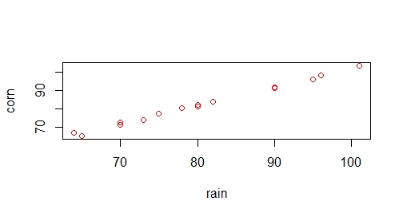
Trong hình ta thấy các điểm dường như nằm trên cùng một đường thẳng. Nếu lượng mưa tăng
thì có vẻ như lượng bắp thu hoạch được cũng tăng. Nhưng đó chỉ là nhận xét. Ta muốn
đo lường nó cụ thể. Khi đó, ta dùng hiệp phương sai (covariance).
Hiệp phương sai đo lường sự biến thiên cùng nhau của hai biến ngẫu nhiên:
\(Cov(X,Y)=E(X-\mu )(Y-\nu )\). Trong đó, \( E(X)=\mu, E(Y)=\nu\).
Nếu 2 biến có cùng xu hướng biến đổi quanh kỳ vọng (nghĩa là,
khi một biến có giá trị cao hơn giá trị kỳ vọng thì biến kia có xu hướng cũng cao hơn
giá trị kỳ vọng, khi một biến có giá trị bé hơn giá trị kỳ vọng thì biến kia có xu hướng
cũng thấp hơn giá trị kỳ vọng), thì hiệp phương sai giữa hai biến này có giá trị dương.
Mặt khác, nếu một biến lớn hơn kì vọng còn biến kia có xu hướng nằm dưới giá trị kì vọng,
thì hiệp phương sai của hai biến này có giá trị âm.
Công thức trên còn có thể được viết là:
$$Cov(X,Y)={E} (X Y)-\mu \nu.$$
Nếu X, Y là các biến ngẫu nhiên giá trị thực và a, b là các hằng số:
$$Cov(X,X)= Var (X)$$
$$Cov(X,Y)=Cov(Y,X)$$.
(Điều này cũng giống như "tôi đi cùng anh = anh đi cùng tôi")
$$Cov(aX,bY)=ab Cov(X,Y)$$
Trên thực tế, chúng ta ước lượng hiệp phương sai
\(Cov(X,Y)=E(X-\mu )(Y-\nu )={E} (X Y)-\mu \nu\) bằng hiệp phương sai mẫu:
Tại sao lại dùng ước lượng này? Ta thấy rằng: ta thường ước lượng \(E(X)\) bằng
\(\overline{X}\), \(E(Y)\) bằng \(\overline{Y}\). Cắm 2 ước lượng này vào
\(Cov(X,Y)=E(X-\mu )(Y-\nu )\)
thì ta được \(E(X-\overline{X} )(Y-\overline{Y} )\). Lớp bên ngoài lại là kỳ vọng, nên bạn
có thể nghĩ là lấy tổng, chia trung bình một lần nữa. Như vậy sẽ thành
\(\frac{1}{n}\sum_{i=1}^n(X_i-\overline{X})(Y_i-\overline{Y})\). Nhưng thực ra, thay vì chia cho n,
chúng ta sẽ chia cho \(n-1\) để ước lượng này là ước lượng không chệch (unbiased). Ở đây, trong \(\sum_{i=1}^n(X_i-\overline{x})(Y_i-\overline{Y})\) có \(n-1\)
bậc tự do. Bậc tự do có thể được lý giải như sau:
Ta có n giá trị \(X_1,..., X_n\) và ta biết trung bình \(\overline{X}\). Như vậy nếu ta biết
\(n-1\) giá trị \(X_1,..., X_{n-1}\) và ta biết trung bình \(\overline{X}\) thì ta có thể suy ra
giá trị \(X_n\).Ước lượng cắm vào kiểu này rất phổ biến và được gọi là
"plug-in estimate".
Hệ số tương quan
Ta thấy là hiệp phương sai (covariance) thì bị ảnh hưởng bởi đơn vị sử dụng (m, cm,dm,mm,...).
Nhưng nhiều khi ta hạn chế điều này. Khi ấy, ta có thể "chuẩn hóa" covariance
\(Cov(X,Y)=E(X-\mu )(Y-\nu )\) như sau:
$$\rho_{X,Y}=E\left(\frac{(X-\mu )}{\sigma _{X}}\frac{(Y-\nu )}{\sigma _{Y}}\right)$$
Khi này, ta chứng minh được \(-1\le \rho_{X,Y}\le 1\).
Ta lại thấy rằng
$$\rho_{X,Y}=E\left(\frac{(X-\mu )}{\sigma _{X}}\frac{(Y-\nu )}{\sigma _{Y}}\right)=\frac{Cov(X,Y)}{\sigma_{X}\sigma _{Y}}=\frac{E(X-\mu )(Y-\nu )}{\sigma _{X}\sigma _{Y}}$$
Ta có định nghĩa chính thức: Hệ số tương quan giữa hai biến ngẫu nhiên X và Y, với kỳ vọng tương ứng
là \(\mu_{X},\mu_{Y}\) và độ lệch chuẩn \(\sigma_{X},\sigma_{Y}>0\),
kí hiệu là \(Corr (X,Y)\), hoặc \(\rho_{X,Y}\) được định nghĩa bởi:
Do \(E[(X-\mu)(Y-\nu)]=E(XY)-\mu\nu\), nên ta cũng có
$$\rho_{X,Y}=\frac{E(XY)-\mu \nu }{\sigma _{X}\sigma _{Y}}$$
Nếu ta tính thì được với bộ dữ liệu trên, \(\hat{\rho}_{X,Y}=0.998\)
Ta ước lượng \(\sigma_{X,Y}\) bằng
Hệ số tương quan càng gần với -1 và 1 thì tương quan giữa các biến càng mạnh.
Hệ số tương quan phụ thuộc vào trung bình của các biến. Mà trung bình thì khá nhạy cảm với
outlier. Do đó, hệ số tương quan cũng khá nhạy cảm với outlier.
Hệ số tương quan (correlation) chỉ đo lường mối quan hệ tuyến tính giữa các biến.
Do đó, ta không nên sử dụng khi mối quan hệ giữa các biến là phi tuyến tính (nonlinear).
Mai:
- Dữ liệu này cho thấy hệ số tương quan là 0.998, như vậy có phải lượng mưa càng nhiều
thì số ngô thu hoạch được càng tăng?
Parker:
- Thì chính cô nói vậy đó thôi!
Mai:
- Như vậy thì nếu lượng mưa là 130mm thì lượng ngô thu được chắc phải cao hơn
rất nhiều nhỉ?
Parker gật đầu dù cảm thấy chăng chắc là mình sắp bị lôi ra làm trò hề tiếp!
Mai:
- Nhưng mà chỉ có mùa bão thì lượng mưa mới nên tới 130mm! Lúc đó cây còn chưa
chắc đã không bị cuốn đi chứ đừng nói tới bắp nhiều hơn!
Parker hí hửng:
- Ồ! Vậy là cái cô dạy tôi là sai?
Mai:
- Sai đâu mà sai! Tại anh ngoại suy ra khỏi vùng dữ liệu cho nên mới như vậy!
Anh không thấy nếu bỏ 130 vào tập dữ liệu thì 130 thế nào cũng thành outlier à?
Parker chưng hửng:
- Tôi bị cô dìm hàng quen rồi nên ... không buồn nghĩ!!!
Mai:
- Thực ra thì hệ số tương quan lớn không có nghĩa là cái này dẫn đến cái kia! Với lại
\(\rho_{X,Y}=\rho_{Y,X}\) nên nếu nói hệ số tương quan lớn đồng nghĩa với việc "cái này
dẫn đến cái kia" thì "nước nhiều dẫn đến ngô nhiều" hay "ngô nhiều dẫn đến nước nhiều"?
Nhưng nhìn chung chúng ta nên cẩn thận với "ngoại suy" (extrapolation), tức là suy luận
xa ra khỏi vùng chúng ta nghiên cứu. Điều này cũng giống như chúng ta không thể dùng
giá cổ phiếu từ năm ngoái đến năm nay để dự đoán giá cổ phiếu 100 năm sau!
Các bạn có thể đọc thêm về một số ví dụ thú vị về hệ số tương quan để thấy được rằng
correlation không đồng nghĩa với "nguyên nhân và kết quả": https://www.tylervigen.com/spurious-correlations
Thông qua đó, chúng ta có thể thấy thêm được rằng nếu hệ số tương quan dương và gần 1
thì đồ thị thường trông thế nào và nếu hệ số tương quan âm và gần -1
thì đồ thị thường trông thế nào.
Ứng dụng của hiệp phương sai, hệ số tương quan trong chứng khoán
Khi chơi chứng khoán thì người ta không muốn bỏ tất cả trứng vào cùng một rọ.
Chẳng hạn như nếu đã đầu tư nhiều vào bất động sản thì không nên cùng một lúc đầu tư
nhiều vào vật liệu xây dựng vì khi bất động sản hạ nhiệt thì số nhà cần xây mới cũng
rất có khả năng giảm nhiều. Do đó, chúng ta có thể sử dụng hiệp phương sai (Covariance) hoặc hệ số tương quan
(correlation) trong trường hợp này. Nếu cùng hệ số tương quan thì chúng ta muốn giá
X của công ty A và giá Y của công ty B có \(\rho_{X,Y}\) càng gần 0 càng tốt.
Nếu \(\rho_{X,Y}\) càng gần -1 thì điều này có nghĩa là khi giá của A hoặc B tăng
thì giá của cái còn lại sẽ giảm. Đó không phải điều mà chúng ta muốn!
hàm mật độ
Nếu X là một biến ngẫu nhiên giá trị thực được định nghĩa trên không gian mẫu \(\Omega\),
thì biến cố \(\{\omega|u < X(\omega)\le v\}\)
có thể được viết đơn giản là,\(\{u< X \le v\}\). Hôm nay chúng ta sẽ nói về biến liên tục.
Mai tranh thủ khoe kiến thức vật lý:
- Nếu trong vật lý có mật độ hạt đo lường số hạt trên mỗi đơn vị thể tích, mật độ năng lượng đo lường năng lượng trên mỗi đơn vị thể tích,
mật độ điện tích là điện tích trên mỗi đơn vị thể tích,... thì chúng ta cũng có "hàm mật độ xác suất" (Probability density function,
viết tắt là PDF) giúp chúng ta biết đo lường xác suất một biến ngẫu nhiên giao động trong mỗi biến cố.
Khả năng một thứ xảy ra thì luôn không âm nên một điều cũng dễ hiểu nhưng dễ quên với nhiều người trong đó có anh là
"hàm mật độ xác suất luôn có giá trị không âm".
Nếu một phân bố xác suất có mật độ
\(f(x)\), thì về mặt trực quan, khoảng vi phân (vô cùng bé) \([x, x + dx]\)
có xác suất bằng \(f(x) dx\).
Định nghĩa một cách chính thức thì một biến ngẫu nhiên X có hàm mật độ \(f(x)\)
nếu \(f:\Omega\rightarrow R\) là một hàm
khả tích không âm sao cho xác suất của khoảng
$$P(X\in [a, b])= P \left[a\leq X\leq b\right]=\int _{a}^{b}f(x)\,dx$$
với hai số bất kỳ a và b.
Chú ý rằng xác suất luôn nằm trong khoảng [0,1]. Như vậy, ta luôn có
$$ \int _{\Omega} \,f(x)\,dx=1$$
Chú ý rằng, đối với phân phối liên tục thì \(P(X< a) = P(X\le a)\).
Dù sao, 2 cái cũng là cùng một phần diện tích. Do đó,
$$P \left[a\leq X\leq b\right]= F_X(b)-F_X(a) \forall a\le b$$
Tuy nhiên, trong ví dụ lần trước về con mèo nhà anh, chúng ta thấy rằng điều này không áp dụng
cho biến ngẫu nhiên rời rạc. Trong ví dụ đó thì \(P(2\le X\le 3)= F_X(3)-F_X(1)\)
Nếu biến ngẫu nhiên X có hàm mật độ xác suất \(f(x)\),
thì giá trị kỳ vọng có thể được tính như sau:
Ghi chú: Các bạn để ý nét tương đồng giữa tích phân này và tổng
\(E(X)=\sum_i x_iP(X=x_i)\) trong trường hợp biến ngẫu nhiên rời rạc.
Điều này giống như việc xấp xỉ diện tích = các hình chữ nhật hoặc tích phân bằng
tổng. Nhưng ở đây ta có biến ngẫu nhiên liên tục, nên thay vì
\(\sum_i x_iP(X=x_i)\) thì sẽ là \(\int x\,\mathrm {dP}(x)\) nhưng
\(\mathrm {dP}(x)=f(x)dx\) nên
$$ \mathrm {E} [X]=\left(\int _{-\infty }^{\infty }x\,\mathrm {dP}(x)=\right)\int _{-\infty }^{\infty }xf(x)\,\mathrm {d} x.$$
Giá trị kỳ vọng của một hàm g(x) tùy ý của x, với hàm mật độ xác suất f(x)
có công thức
$$ \mathrm {E} [g(X)]=\int _{-\infty }^{\infty }g(x)f(x)\,\mathrm {d} x.$$
Đồ thị tần số/tần suất
Từ số liệu này, tôi có được đồ thị tần số như sau:
Tần số tương đối = tần số/n. Trong đó n là tổng số quan sát
Nếu ta có tần số là số lần một giá trị xuất hiện trong mẫu thì ta cũng thường quan
tâm đến tần suất = số lần một giá trị xuất hiện trong mẫu chia cho cỡ mẫu. Nếu
anh là người chuyên nghiệp thì anh sẽ quan tâm tới tần suất, tỉ lệ hơn.
Chuyện này cũng dễ hiểu thôi! Người ta hẹn hò 5 lần/tuần là nhiều nhưng so với anh
thì không là gì! Quảng cáo là
mì khoai lang không sợ nóng nhưng thực ra trong thành phần gói mì ghi chỉ có vài gam
khoai trong 1 kg bột mì.
Nếu chúng ta có đồ thị tần số thì chúng ta cũng có đồ thị tần suất.
Đồ thị tần suất cho ta biết khả năng biến ngẫu nhiên nhận giá trị này so với
những giá trị khác trong dữ liệu. Đường mật độ thể hiện sự phân bố xác suất của một biến ngẫu nhiên.
Diện tích của phần dưới đường mật độ luôn bằng 1.
Diện tích dưới đường cong nằm giữa hai giá trị \(a\) và \(b\)
là xác suất mà một quan trắc ngẫu nhiên sẽ có giá trị nằm giữa \(a\) và \(b\).
Đối với biến ngẫu nhiên liên tục, ở trên đồ thị
tần suất người ta thường vẽ đường mật độ (chính xác hơn thì đây là đường
cong để xấp xỉ đường mật độ).
Chú ý: Chúng ta không vẽ đường mật độ (density function) trên đồ thị
tần số mà vẽ trên đồ thị tần suất.
Ví dụ:
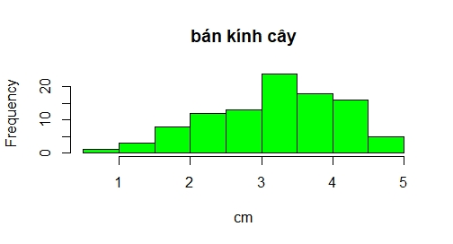
Đồ thị tần số
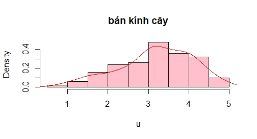
Đồ thị tần suất. Đường màu đỏ là đường mật độ mà ta ước lượng được từ dữ liệu.
Code trong R:
u = rnorm(100, 3,1) # tạo mẫu ngẫu nhiên
# vẽ đồ thị tần số:
hist(u,main = "bán kính cây", xlab="cm", col='green')
# vẽ đồ thị tần suất:
hist(u, probability = TRUE,main = "bán kính cây")
# vẽ đường mật độ:
lines(density(u))
Đồ thị dễ gây hiểu nhầm
Đồ thị không bắt đầu từ 0 nhiều khi rất dễ gây nhầm lẫn. Đôi khi điều này khiến bàn dân thiên hạ
phấn khích. Chẳng hạn như có bài báo đăng đồ thị về số phù thủy đến Lahey du lịch như sau,
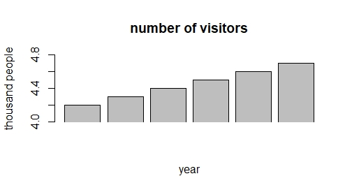
Bài báo này khiến ai đọc cũng hài lòng vì tưởng Lahey bắt khách lắm,
nhưng nếu nhìn kỹ thì lượng người đến mỗi năm chỉ tăng thêm 100!!!
Tuy nhiên, đôi khi cũng có một số người cố tình tạo đồ thị dễ hiểu nhầm để làm lợi cho mình.
Chẳng hạn, CEO của một công ty đưa ra đồ thị này
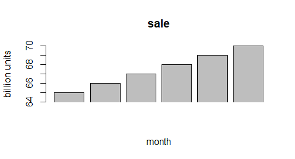
và tuyên bố số lượng hàng bán được dưới thời anh ta là CEO là rất cao
nhưng đây là đồ thị khi không bị cắt mất một đoạn
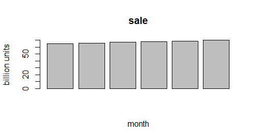
phân phối chuẩn
Hàm mật độ xác suất của phân phối chuẩn với trung bình
\(\mu\) và phương sai \(\sigma^{2}\) (hay, độ lệch chuẩn \(\sigma\),
ký hiệu \(X \sim N(\mu ,\sigma ^{2})\), là
$$f(x;\mu ,\sigma )={\frac {1}{\sigma {\sqrt {2\pi }}}}\exp \left(-{\frac{(x-\mu )^{2}}{2\sigma ^{2}}}\right).$$
Hàm mật độ xác suất cho phân phối chuẩn
với các tham số khác nhau:
Như vậy ta thấy ngay được rằng:
Hàm mật độ có dạng chuông và đối xứng qua kỳ vọng (xem hình bên dưới).
Giá trị trung bình cũng là mode và trung vị của nó.
Ngoài ra thì nhìn vào hình sau
(nguồn: Wikipedia)
ta thấy được:
Khoảng 68% của diện tích dưới đường cong là nằm trong khoảng 1 lần độ lệch chuẩn
tính từ trị trung bình (tức là khoảng \((\mu -\sigma ;\mu +\sigma ))\).
Khoảng 95% của diện tích dưới đường cong là nằm trong khoảng 2 lần độ lệch chuẩn
(tức là khoảng \((\mu -2\sigma ;\mu +2\sigma)\)).
Khoảng 99.7% của diện tích dưới đường cong là nằm trong khoảng 3 lần độ lệch chuẩn
( tức là khoảng \( (\mu -3\sigma ;\mu +3\sigma )\)).
Một số tính chất quan trọng:
Nếu \(X, Y\) là jointly normal và không tương quan (uncorrelated),
thì chúng độc lập với nhau.
Nếu \(X\sim N(\beta_1, \eta_1^2),Y\sim N(\beta_2,\eta_2^2)\)
là 2 biến ngẫu nhiên độc lập thì \(X+Y\sim N(\beta_1+\beta_2,\eta_1^2+\eta_2^2).\)
Chuẩn hóa phân phối chuẩn
Trong phần trước, ta thấy rằng các phân phối chuẩn với các tham số khác nhau đều có điểm
chung là có dạng chuông. Vậy có cách nào để đưa chúng lại gần nhau hơn? Khi chúng
có càng nhiều điểm chung thì khi chúng ta làm nghiên cứu, chúng ta thường có thể đưa ra
nhiều kết luận tổng quát hơn. Cách đơn giản đó là đưa tất cả về một phân phối chuẩn "đơn vị":
Nếu \(X\sim N(0,1)\) thì phân phối được gọi là phân phối chuẩn chuẩn tắc
và hàm mật độ xác suất rút gọn thành
$$f(x)={\frac{1}{{\sqrt {2\pi }}}}\exp \left(-{\frac {x^{2}}{2}}\right).$$
Nếu \(X\sim N(\mu,\sigma^2)\) thì \(\frac{X-\mu}{\sigma}\sim N(0,1)\).
Ta kí hiệu \(z_\alpha\) là giá trị X sao cho \(P(Z\le x)=\alpha\) với Z là
phân phối chuẩn chuẩn tắc. Nói cách khác, \(z_\alpha\) là giá trị X sao cho
diện tích phần nằm dưới đường cong về mé trái của X là \(\alpha\). Trong hình sau
thì phần màu xanh lục có diện tích là \(\alpha\)
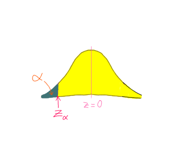
Bài tập: 1. Phân phối của độ bền (tính theo ngàn km) của lốp xe có phân phối chuẩn N(80,100)
Xác suất một bánh xe có độ bền lớn hơn 96 ngàn km là bao nhiêu?
Xác suất một bánh xe có độ bền trong khoảng 70-90 ngàn km là bao nhiêu?
Xác suất một bánh xe có độ bền thấp hơn 40 ngàn km là bao nhiêu?
2. Lượng mủ trôm thu được từ các cây trong vụ thu hoạch vừa rồi (tính theo lạng)
có phân phối chuẩn N(4,2). Một nhà sinh vật học muốn nghiên cứu về 15% những
cây trôm cho nhiều mủ nhất để xác định xem gen nào giúp chúng cho nhiều mủ hơn.
Như vậy, thì cây phải cho lượng mủ thấp nhất là bao nhiêu để được
lọt vào trong nghiên cứu này?
Đánh giá độ chuẩn
Chúng ta cần xác định xem dữ liệu có tuân theo phân phối chuẩn hay
không nhưng lưu ý điều này chỉ là xấp xỉ, không phải chắc chắn hoàn toàn.
Lưu ý rằng khi cỡ mẫu lớn, chẳng hạn như \(n>30\) thì định lý giới hạn trung tâm cho ta biết
\(\overline{X}\) có phân phối xấp xỉ được bằng phân phối chuẩn, nên đối với trường hợp này thì chúng ta không cần quá
quan tâm đến việc đánh giá độ chuẩn. Tuy nhiên, đối với trường hợp mẫu nhỏ thì nếu:
mẫu chứa outlier, hoặc có độ lệch (skewness) quá cao, có nhiều đỉnh (multimodal),
thì ta có thể kết luận ngay rằng dữ liệu không tuân theo phân phối chuẩn.
Người ta thường dùng normal quantile plot để đánh giá độ chuẩn. Ta không phân tích
chi tiết về quantile plot ở đây, nhưng trong R, ta có thể dùng lệnh qqnorm, qqline. Ví dụ:
data = rnorm(100) # khởi tạo dữ liệu nngẫu nhiên
qqnorm(data, col='green')
qqline(data)
Ta được hình sau
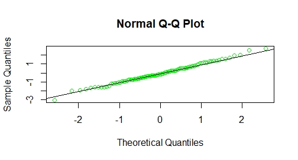
Trong hình, các điểm dường như nằm trên một đường thẳng. Do đó, ta có thể giả sử rằng dữ liệu
tuân theo phân phối chuẩn. Tuy nhiên, nếu dữ liệu không nằm trên cùng một đường thẳng như trong
hình sau
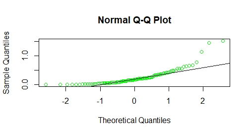
thì ta có thể nói rằng dữ liệu này không tuân theo phân phối chuẩn.
Hai biến ngẫu nhiên X và Y là độc lập khi và chỉ khi với các số a và b bất kỳ,
biến cố \([X \le a]\) (biến cố rằng X nhỏ hơn hay bằng a) và \([Y \le b]\) là các biến cố độc lập.
Tương tự, một tập hợp các biến ngẫu nhiên tùy ý là độc lập nếu với tập hợp hữu hạn bất kỳ
\(X_1,..., X_n\) và một tập hữu hạn bất kỳ gồm
các số \(a_1,..., a_n\), các biến cố \([X_1\le a_1],...,[X_n\le a_n]\) là các biến cố độc lập,
như đã được định nghĩa ở trên.
Nếu X và Y là độc lập, thì \(E[X, Y] = E[X] E[Y]\) và \(var(X + Y) = var(X) + var(Y)\).
Do đó, \(cov(X,Y) = 0\). Ta có thể hiểu trong trường hợp này là nếu X và Y là độc lập thì
chúng không dao động cùng nhau, tức là \(cov(X,Y) = 0\).
Ngoài ra, các biến ngẫu nhiên X và Y với các hàm phân bố \(f_X(x)\) và \(f_Y(y)\),
là độc lập khi và chỉ khi
$$F_{X,Y}(x,y)=F_{X}(x)F_{Y}(y), $$
Giả sử \(X,Y\) có hàm mật độ xác suất là \(f_X(x)\) và \(f_Y(y)\) thì X và Y độc lập với nhau
khi và chỉ khi
$$f_{X,Y}(x,y)=f_{X}(x)f_{Y}(y).$$
Để hiểu điều này, chúng ta cũng có thể liên tưởng đến việc hai biến cố \(A, B\) là độc lập
khi và chỉ khi
$$P(A\cap B)=P(A)P(B)$$
Nếu X và Y độc lập, thì hiệp phương sai của chúng bằng 0, bởi vì khi đó,
$$E(X. Y)=E(X). E(Y)=\mu \nu.$$
Thay thế vào dạng thứ hai của công thức hiệp phương sai ở trên, ta có
$$ Cov(X,Y)=\mu \nu -\mu \nu =0.$$
Tuy nhiên, điều ngược lại không đúng: nếu X và Y có hiệp phương sai bằng 0,
hai biến này KHÔNG nhất thiết độc lập. Do đó, chúng ta có cái tên riêng cho mối quan hệ này:
Các biến ngẫu nhiên có hiệp phương sai bằng không được gọi là
không tương quan (uncorrelated).
Phân phối mũ (phân phối đãng trí)
Mai:
- Sao tôi giao bài tập mà anh không làm?
Parker:
- Tôi quên!
Mai tròn mắt, vẻ hơi giận:
- Anh đãng trí đến mức đó cơ á?
Parker:
- Ừ! Tôi đãng trí vậy á! Có cách nào mô tả sự đãng trí bằng xác suất thống kê không?
Mai cười:
- Có chứ! Nếu anh đã muốn biết như vậy thì mời anh học phân phối mũ.
Một biến ngẫu nhiên X được gọi là có phân phối mũ với tỉ lệ (rate) \(\lambda\), kí hiệu là
\(X\sim exp(\lambda)\) nếu
hàm mật độ xác suất của nó có dạng:
$$f(x;\lambda )=\left\{{\begin{matrix}\lambda e^{-\lambda x}&,\;x\geq 0,\\0&,\;x<0.\end{matrix}}\right.$$
Khi đó, \(\mathbf {E} [X]={\frac {1}{\lambda }}\) và \(Var(X)=\frac {1}{\lambda ^{2}}\).
Ta ước lượng tỉ lệ (rate) \(\lambda\) bằng nghịch đảo của trung bình mẫu: \(\widehat {\lambda }=\frac {1}{\overline {x}}\).
Hàm phân bố tích lũy của phân phối mũ là:
$$F(x;\lambda )=\left\{{\begin{matrix}1-e^{-\lambda x}&,\;x\geq 0,\\0&,\;x<0.\end{matrix}}\right.$$
Một tính chất quan trọng của phân phối mũ là nó không nhớ. Nghĩa là nếu một biến ngẫu nhiên T
có phân phối mũ thì:
$$ P(T>s+t\;|\;T>t)=P(T>s)\;\;\forall\ s,t\geq 0.$$
Ví dụ: \(P(T > 40 | T > 30) = P(T > 10)\) . Điều này có nghĩa là xác suất điều kiện rằng ta cần đợi, chẳng hạn, 10 phút nữa trước
khi cú điện thoại tiếp theo được gọi đến, biết rằng ta đã đợi nó 30 phút rồi,
không khác gì với xác suất cho việc ta cần đợi thêm 10 phút nữa cho đến khi cú điện thoại
tiếp theo được gọi đến, biết rằng ta vừa mới bắt đầu quá trình đợi.
Tuy nhiên, \(P(T > 40 | T > 30) = P(T > 10)\) không có nghĩa rằng các biến cố
\(T > 40\) và \(T > 30\) là độc lập vì
\(P(T>40\mid T>30)=P(T>10)\)(không nhớ)\(\neq P(T>40\mid T>30)=P(T>40)\)(độc lập)
Một số ví dụ về việc mô hình hóa sử dụng phân phối mũ:
- Thời gian cho đến khi một vụ tai nạn giao thông xảy ra lần nữa trên một đoạn đường
- Thời gian cho đến khi một hạt phóng xạ phân rã
- Khoảng cách giữa các đột biến trên một sợi ADN
- Khoảng cách giữa hai đoạn hay xảy ra tai nạn trên một con đường cho trước.
Mũi tên đãng trí: luật số lớn
- Hôm nay lại bắn cung nữa hả?
- Anh đã nâng được xác suất bắn trúng tâm bia chưa?
- Rồi! Tôi tiến bộ nhanh lắm, cô không biết thì thôi!
- Ừ thì tôi hỏi thăm thôi! Vì chuyện là như thế này! Giả dụ như xác suất bắn trúng của
anh là 0.5 thì về lâu về dài cứ 10 phát bắn thì anh sẽ bắn trúng 5 phát. Tuy nhiên thì những
lần đầu tiên anh có thể bắn trượt liên tiếp. Nếu vậy thật thì cũng đừng nản lòng. Cứ bắn tiếp 10
phát xem sao. Nếu lại bắn trượt gần hết thì cứ tiếp, trước sau gì thì cũng có thêm nhiều phát trúng!
- Cô nói cái kiểu gì ấy! Nếu xác suất bắn trúng là 0.5 thì nếu tám phát liên tiếp mà đã
trượt thì phát thứ chín với thứ mười, khả năng bắn trúng phải cao hơn chứ! Hơn nữa, với tiến bộ
vượt bậc của tôi thì chuyện đó thì làm sao có thể xảy ra!
- Ơ này! Mũi tên thì không có trí nhớ nhé! Mỗi lần bắn là độc lập với nhau nên anh bắn
lần nào thì xác suất trúng cũng chỉ là 0.5, làm gì có chuyện sau 8 lần liên tiếp không bắn trúng
thì lần thứ 9 với thứ 10 khả năng bắn trúng phải cao hơn???
- Nhưng mà cô chẳng nói là về lâu về dài thì cứ 10 phát bắn thì anh sẽ bắn trúng 5 phát còn gì?
Mai cười:
- Về lâu về dài nhưng vấn đề là dài cỡ nào? Theo luật số lớn mạnh (strong law of large
numbers) thì trung bình sẽ tiến tới kỳ vọng với xác suất bằng 1, nhưng anh phải để ý rằng công
thức chỉ nói rằng là khi n tiến tới vô cùng thì điều này xảy ra! Nên nếu trong 10 phát đầu
tiên mà có 3, 4 phát bắn trúng thì cũng không có nghĩa rằng xác suất bắn trúng của anh là dưới
0.5!
Luật yếu số lớn (weak law of large numbers):
\(\overline{X}_n \xrightarrow{\text{P}} \mu \qquad \text {khi } n\rightarrow \infty \),
tức là \(\forall\epsilon>0,\lim_{n\to \infty }P(|\overline{X}-\mu|>\epsilon)=0\).
Nói cách khác,
\(\forall\epsilon>0, \lim_{n\to \infty }P \left(\,|\overline{X}_n-\mu |>\varepsilon \,\right)=0.\)
Tức là với \(\epsilon>0\) nhỏ đến cỡ nào, thì với cỡ mẫu đủ lớn, ta có thể đạt được xác suất
rất cao rằng trung bình gần với kỳ vọng (no matter how small the nonzero margin is specified,
with a sufficiently large sample there will be a very high probability that the average of the
observations will be close to the expected value; i.e., their difference lie within the margin).
Luật số lớn mạnh (strong law of large numbers):
\(\overline{X}_n \xrightarrow{\text{a.s.}} \mu \qquad \text {khi } n\rightarrow \infty \) tức là
\( P \left(\lim _{n\to \infty}{\overline {X}}_{n}=\mu \right)=1.\) Như vậy, khi n tiến tới
vô cùng thì trung bình tiến tới kỳ vọng với xác suất bằng một (as the number of trials
n goes to infinity, the average of the observations converges to the expected value,
is equal to one).''
Rồi Mai hỳ hỳ nhấn mạnh:
- Nên nếu chuyện như vậy xảy ra trước mặt bạn gái thì anh cứ kiên trì bắn cỡ 100 phát
thì có thể tỷ lệ trúng sẽ gần với 0.5 hơn. Mà như vậy thì cũng theo luật số lớn á, anh cũng có thể thấy được rằng,khi cỡ mẫu nhỏ thì số liệu có thể dao động nhiều hơn.
Trong khi đó, mẫu lớn nhìn sẽ có vẻ ổn định hơn theo luật số lớn!
Cụ thể, nếu X là một biến ngẫu nhiên nhận giá trị 0 nếu anh bắn không trúng, và
nhận giá trị bằng 1 nếu anh bắn trúng. Giả sử thêm rằng xác suất anh bắn trúng là \(p\) thì
\(X\sim Bernoulli(p)\). Do đó, \(E(X)=p\),nên theo định lý giới hạn trung tâm,
ta biết là ki ta thảy đồng xu càng nhiều thì
\(\hat{p}=\)số lần cho mặt ngửa/số lần thảy đồng xu càng tiến gần tới \(p\).
Bài tập:
Gian tarantulas. page 343. Elementary Statistics, Neil Weiss.
Định lý giới hạn trung tâm
Giả sử \(X_1,...,X_n,...\) là một dãy các biến ngẫu nhiên độc lập có cùng phân phối xác suất
với kỳ vọng bằng \(\mu\), và phương sai \(\sigma ^2<\infty \). Giả sử
\(\overline{x}_n=\frac{\sum_{i=1}^nX_i}{n}\)
thì
\(\frac{\overline{x}_n-\mu}{\sigma/\sqrt{n}}\overset{d}{\rightarrow} N(0,1)\) khi \(n{\rightarrow}\infty.\)
Như vậy, định lý giới hạn trung tâm cho ta biết: khi ta lấy trung bình
các biến ngẫu nhiên độc lập với nhau và chuẩn hóa trung bình này thì khi ta tăng
n, trung bình này tiến ngày một gần tới \(N(0,1)\).
Xấp xỉ phân phối nhị thức bằng phân phối chuẩn
Nếu \(X_1,..,X_n\;\underset{\sim}{i.i.d.}\; Ber(p)\) thì
\(E(X_i)=p, Var(X_i) = p(1-p) \forall i = 1,...,n.\)
Ta có \( \hat{p}=\frac{\sum_{i=1}^nX_i}{n}\) là một ước lượng không chệch cho \(p\).
Áp dụng định lý hội tụ trung tâm ta được khi n đủ lớn
$$\frac{\hat{p}-p}{\sqrt{p(1-p)}/\sqrt{n}}\approx N(0,1)$$
Ta lại có: đặt \(X = \sum_{i=1}^n X_i\) thì \(X\sim Binom(n,p)\). Do đó,
$$\frac{n\hat{p}-np}{n\sqrt{p(1-p)}/\sqrt{n}}\approx N(0,1)$$
$$\Rightarrow \frac{X-np}{\sqrt{np(1-p)}}\approx N(0,1)$$
Tức là khi n đủ lớn
$$X\sim Binom(n,p)\approx N(np, np(1-p))$$
Như vậy
Khi n đủ lớn thì \(Binom(n,p)\approx N(np, np(1-p))\)
Vậy n như thế nào thì gọi là đủ lớn? Áp dụng điều này vào trong thực tiễn để xác định bao nhiêu n là đủ thì
người ta thấy là khi \(n,p\) thỏa mãn \(np\ge 5\) và \(n(1-p)\ge 5\) thì xấp xỉ này là khá tốt!
Hiệu chỉnh liên tục:
Ví dụ: Giả sử ta có \(X\sim Binom (20,0.7)\) thì ta có thể sử dụng phân phối chuẩn để xấp xỉ
phân phối nhị thức. Câu hỏi là xác suất \((X=8)\) bằng bao nhiêu?
Ta có \(X\sim Binom(20,0.7)\approx N(14,4.2)\)
Tuy rằng xấp xỉ như ta đã nói ở ngay bên trên là khá tốt nhưng ta thấy rằng ta đang xấp xỉ một phân phối rời rạc
bằng một phân phối liên tục nên phép xấp xỉ này, ta có thể hình dung như sau:
Nhìn vào hình thì ta thấy rằng để xấp xỉ tốt hơn, chúng ta hiệu chỉnh một chút khi tính diện
tích dưới đường cong bằng cách xấp xỉ như sau:
Do \(X\sim Binom(20,0.7)\) nên ta có \(P(X=8)=P(7.5\le X \le 8.5)\). Do đó, ta chuẩn hóa với
\(\mu = 14, \sigma=\sqrt{4.2}\) để được
\(P(X=8)\approx P(\frac{7.5-20}{\sqrt{4.2}}<\frac{7.5-\mu}{\sigma }<\frac{8.5-20}{\sqrt{4.2}})\)
\(\Rightarrow P(X=8)\approx P(-6.1\le Z\le -5.6)=\Phi(-8.8)-\Phi(-9.1)=1 .01\times 10^{-8} \)
Để tính \(P(X\ge 8)\) ta làm tương tự:
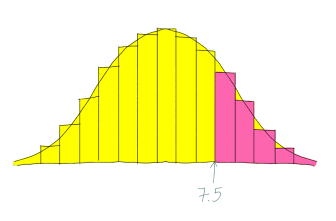
Như vậy
$$P(X\ge 8 )=P(X \ge 7.5)\approx P(\frac{X-\mu}{\sigma}\ge\frac{7.5-14}{\sqrt{4.2}})= P(Z\ge -3.17)=1-\Phi(-3.17)=0.999$$
Tương tự,
$$P(X\le 8 )=P(X\le 8.5)\approx P(\frac{X-\mu}{\sigma}\le\frac{8.5-14}{\sqrt{4.2}})= P(Z\le -2.68)=\Phi(-2.68)=0.004$$
Bài tập: 1.Bạn định thuê nhà ở thành phố. Chủ nhà yêu cầu anh trả $1500 một tháng.
Trong khi đó, theo một bảng khảo sát trên 100 căn hộ thì mức giá thuê căn hộ cho một
người ở có trung bình là $1000 với phương sai 300. Như vậy, liệu giá căn hộ bạn định
thuê $1500 một tháng có là quá bất thường?
2.Một tàu lượn trên không được thiết kế để có thể cho 50 người lượn trên không cùng một lúc.
Khối lượng tối đa mà tàu lượn này có thể chạy mà vẫn giữ được an toàn là \(5000\) kg.
Cân nặng của người lớn (kg) có phân phối chuẩn \(N(70,15)\).
Nếu có 50 người trên tàu lượn cùng một lúc, xác suất khối lượng của tất cả những người
lượn vượt giới hạn cho phép là bao nhiêu?
Khoảng tin cậy cho trung bình
Cứ trước mỗi buổi vào học là Parker lại để một thứ gì đó đáng để tò mò trên bàn để Mai nhìn vào.
Lần này là tin tức về rồng. Đó là bảng xếp hạng độ nguy hiểm do rồng tấn công từ các bang.
Mai ngưng mắt nhìn tờ báo một tí rồi nhếch mép cười. Parker hỏi:
- Cười gì? Người ta bị rồng tấn công cô lại cười!
- Tôi cười độ rảnh của anh với mấy người hay đọc mấy cái thứ lá cải này! - Mai bực mình nhìn
Parker, thừa biết có kẻ luôn muốn câu giờ - Người ta nghe đến số ca nhập viện vì rồng tấn công ở Alabama nhiều còn ở Maine thì ít,
nên chắc tưởng rồng ở Alabama hiền hơn. Nhưng thực tế ở Maine có mấy người ở đâu mà chẳng
tai nạn ít hơn! Tỉ lệ không quan tâm, quan tâm đến số lượng!
Parker bào chữa:
- Nhưng cũng phải xem xem tỉ lệ của cái gì với cái gì chứ! Nhiều khi biết số lượng vẫn hơn!
Mai:
- Ví dụ?
Parker:
- Có lần tôi mua Bolga (món gồm thịt gà thả trong vườn cây thuốc của phù thủy và thịt ngựa),
người bán nói tỉ lệ 1-1 mà giá rẻ quá chừng! Tôi cứ phân vân sao giá lại rẻ như vậy. Về sau mới
biết tỉ lệ này không phải 1kg gà - 1kg ngựa mà là 1 con gà - 1 con ngựa! Mà nếu vậy thì
tính ra lại mắc
Mai bật cười:
- Coi bộ anh đẹp mã như vậy mà cũng bị người ta lừa!
Parker:
- Đây không phải là bị lừa, mà là hiểu nhầm về khối lượng!
Kệ cho Parker bào chữa, Mai vẫn ha ha ha...! Mai nói tiếp:
- Nói chung là tùy trường hợp nhưng trong nhiều tình huống, chúng ta nên quan tâm đến tỉ lệ
hơn là số lượng! Nhưng như vậy vẫn chưa chắc đã là sự lựa chọn tốt nhất! Nay chúng ta học
khoảng tin cậy!
Khoảng tin cậy (confidence interval) là một khoảng số thực được tính dựa trên thống kê mà ta có.
Mức tin cậy (confidence level) cho ta biết ta trường hợp tự tin đến mức nào về việc tham số
mà chúng ta ước lượng sẽ rơi vào khoảng tin cậy đó.
Ta nhớ lại rằng:
nếu \(X\sim N(\beta_1, \eta_1^2),Y\sim N(\beta_2,\eta_2^2)\)
là 2 biến ngẫu nhiên độc lập thì \(X+Y\sim N(\beta_1+\beta_2,\eta_1^2+\eta_2^2).\)
Giả sử tôi có một mẫu \(X_1,..., X_n\;\;\underset{\sim}{i.i.d}\;\;N(\mu,\sigma ^2) \)
thì
$$\overline{X}=\frac{\sum_iX_i}{n}\sim \;\;N\left(\mu_1,\frac{\sigma ^2}{n}\right)$$
$$\Rightarrow \frac{\overline{X}-\mu}{\sigma /\sqrt{n}}\sim \;\;N(0,1)$$
$$\Rightarrow P(-z_{\alpha/2}\le\frac{\overline{X}-\mu}{\sigma /\sqrt{n}}\le z_{\alpha/2})=1-\alpha $$
$$\Rightarrow P(\overline{X}-z_{\alpha/2}\sigma /\sqrt{n}\le \mu\le \overline{X}+z_{\alpha/2}\sigma /\sqrt{n})=1-\alpha$$
thì $$[\overline{X}-z_{\alpha/2}\sigma /\sqrt{n}, \overline{X}+z_{\alpha/2}\sigma /\sqrt{n}]$$ được gọi là
khoảng tin cậy mức \(1-\alpha\) cho \(\mu\).
Ví dụ: 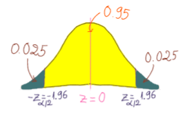
Ở Mỹ người ta bán nhiều loại trái cây theo quả chứ không theo khối lượng như ở Việt Nam
(ví dụ: $1 một quả dưa chuột, $0.8 một quả kiwi,... cho dù các quả là to nhỏ khác nhau). Do đó, nếu quả quá nhỏ thì
khó bán được với giá tốt. Nếu quả quá to thì lại lỗ về chi phí nhà vườn và một số vấn đề khác (Ví dụ:
người tiêu dùng không muốn mua quả táo quá to vì to quá thì ăn một lần không hết, muốn mua quả táo quá nhỏ
vì như vậy thì hạt nhiều hơn). Do đó, trước khi chính thức thu hoạch vựa trái cây, một chủ vườn muốn tìm
khoảng tin cậy cho khối lượng trung bình của mỗi quả táo gala trong vườn.
Anh ta hái ngẫu nhiên 50 quả táo thì tính được khối lượng trung bình của một quả táo là 135 gram, với độ lệch chuẩn
là 10 . Như vậy với mức ý nghĩa \(\alpha=0.05\) thì khoảng tin cậy mức \(0.95\) cho \(\mu\)
là \([135-1.96 \frac{10}{\sqrt{50}}, 135+1.96 \frac{10}{\sqrt{50}}]\), tức là
\([132.23, 137.77]\). Tuy nhiên,
khối lượng trung bình tối ưu của táo là 142 gram/quả (khối lượng tối ưu biết được dựa trên
thị trường). Do đó, anh ta quyết định chưa thu hoạch vội!
Đại dịch HIV và thời gian ủ bệnh trung bình
Khi lại dịch AIDS xuất hiện vào thập niên 1980 thì người ta cần biết xem có bao nhiêu người
bị lây nhiễm nhằm chuẩn bị đối phó với nạn dịch này. Ta thấy rằng khi mà một cá nhân tiếp xúc
với nguồn bệnh thì trong đó sẽ có một số người bị lây, và sau một thời gian ủ bệnh thì nhiều người
trong số những người này sẽ có xuất hiện những triệu chứng của bệnh. Khi một người đã bị lây nhiễm
thì người đó thành nguồn bệnh và có thể khiến người khác bị lây. Chúng ta không thể đoán được rằng
ai là người sẽ tiếp xúc với nguồn bệnh hay là bị lây nhiễm hay là sẽ làm người khác bị lây.
Thay vào đó chúng ta sử dụng mô hình xác suất và ước lượng các tham số của những phân phối này.
Một trong những tham số quan trọng đó là thời gian ủ bệnh trung bình.
Nếu biết được tham số ngày chúng ta có thể kết hợp với việc đếm những người có bệnh và ước lượng
số lượng người bị lây. Hơn nữa, nhờ hoàn cảnh đặc biệt nên họ có một nhóm bệnh nhân mà họ biết
được thời gian bị lây nhiễm và thời gian căn bệnh xuất hiện. Đó là do một số người mắc chứng máu
loãng khó đông đã tiếp xúc với bệnh HIV qua nguồn máu chứa mầm bệnh. Từ đó người ta có được dữ
liệu để ước tính thời gian ủ bệnh trung bình.
Tuy rằng chúng ta có ước lượng cho tham số nhưng nó chỉ là một con số (5.7 năm, 8 năm,...).
Chúng ta không thể khẳng định là nó sát với giá trị thực tế của tham số đến mức nào.
Do đó chúng ta dùng khoảng tin cậy của ước lượng. Đôi khi khoảng tin cậy là quá rộng.
Như vậy thì chúng ta nên thu thập thêm thông tin để đưa ra quyết định tốt hơn.
Trong trường hợp này thì chúng ta nên xem xét áp dụng các chính sách bằng cách sử dụng giá trị
nhỏ nhất thay vì giá trị lớn nhất của tham số “thời gian ủ bệnh trung bình”.
Ý nghĩa của khoảng tin cậy: Khi mà chúng ta gặp lại quá trình nhiều lần thì chúng ta sẽ
thấy rằng khoảng tin cậy 95% sẽ cho ta một khoảng tin cậy mà giá trị thực của tham số nằm
trong khoảng đã được tính 95% số lần thực hiện. Tuy nhiên xác suất tương ứng với khoảng tin
cậy không phải xác suất mà chúng ta đúng. Nó cũng không cho ta biết ước lượng mà chúng ta có
chính xác đến cỡ nào.
Trên thực tế thì chúng ta thường không biết \(\sigma ^2\) mà phải ước lượng từ dữ liệu. Nếu cỡ mẫu
n đủ lớn thì ta có thể xấp xỉ \(\frac{\overline{X}-\mu}{\sigma ^2/n}\) bằng phân phối chuẩn \(N(0,1)\).
Nhưng nếu cõ mẫu nhỏ thì làm vậy không hiệu quả cho lắm. Bởi vậy, ta có định nghĩa
Nếu \(X_1,..., X_n\;\;\underset{\sim}{i.i.d}\;\;N(\mu,\sigma ^2)\) thì phân phối của
$$T=\frac{\overline{X}-\mu}{S/\sqrt{n}}$$ được gọi là phân phối Student, hay phân phối t, với bậc
tự do n-1.
Ở đây, \(S=\sqrt{\frac{\sum_i(X_i-\overline{X})^2}{n-1}}\).
Như vậy thì khoảng tin cậy cho \(\mu\) khi cỡ mẫu nhỏ là
$$[\overline{X}-t_{\alpha/2}.\frac{s}{\sqrt{n}}, \overline{X}+t_{\alpha/2}.\frac{s}{\sqrt{n}}].$$
Ta tìm hiểu thêm một chút về phân phối Student và mối liên hệ của nó với phân phối chuẩn
Nhìn vào hình sau (\(nu\) là bậc tự do)
Nguồn: Wikipedia
Ta thấy được rằng
phân phối Student cũng có hình chuông và đối xứng qua trung bình như phân phối chuẩn
trung bình, trung vị, mode của phân phối Student đều bằng 0
Khi bậc tự do càng cao, phân phối Student tiến càng gần đến phân phối chuẩn (do đó,
khi cỡ mẫu lớn, ta có thể dùng phân phối chuẩn để xấp xỉ)
phân phối Student hội tụ đến phân phối chuẩn
Trong những công thức về khoảng tin cậy mà ta rút ra được phía trên thì
ta thấy độ dài của khoảng tin cậy lần lượt là \(2z_{\alpha/2}.\frac{\sigma ^2}{\sqrt{n}}\)
và \(2t_{\alpha/2}.\frac{s}{\sqrt{n}}.\) Như vậy, để khoảng tin cậy trở nên ngắn hơn,
chúng ta có thể tăng cỡ mẫu. Câu hỏi được đặt ra là cần thu thập bao nhiêu
dữ liệu để thu được một khoảng tin cậy \(1-\alpha\) có độ dài cho trước là 2E?
Để giải quyết vấn đề này, chúng ta giải phương trình
\(2E=2z_{\alpha/2}.\frac{\sigma }{\sqrt{n}}\)
theo n đối với trường hợp chúng ta đã biết \(\sigma^2\) hoặc khi cỡ mẫu lớn.
Khi đó, ta thu được
\(n =\left(\frac{z_{\alpha/2}\sigma }{E} \right)^2\) (chú ý làm tròn nếu cần).
Tương tự với trường hợp cỡ mẫu nhỏ, ta giải phương trình
$$2E=2t_{\alpha/2}.\frac{s }{\sqrt{n}}$$
theo n.
Khi đó, ta thu được
\(n =\left(\frac{t_{\alpha/2}s }{E} \right)^2\) (chú ý làm tròn nếu cần).
phân phối Chi bình phương và khoảng tin cậy cho phương sai
Nếu \(X_1...,X_n\) là các biến ngẫu nhiên độc lập có cùng phân phối \(N(0,1)\) thì
\(X_1^2+...+X_n^2\sim \chi_n^2\). Trong đó, \(\chi_n^2\) là phân phối Chi bình phương
với bậc tự do là n.
Nếu \(X_1...,X_n\) là các biến ngẫu nhiên độc lập có cùng phân phối \(N(0,1)\) thì
\(\frac{(n-1)s^2}{\sigma ^2}\sim \chi _{n-1}^{2}\). Trong đó, \(s^2\) là phương sai mẫu.
Chú ý mặc dù tổng \(s^2=\sum_{i=1}^n(X_i-\overline{X})^2 \) có n
thành phần nhưng bậc tự do của phân phối Chi bình phương là n-1.
Khoảng tin cậy cho \(\sigma ^2\) là
$$\frac{(n-1)s^2}{\chi_{R,n-1}^2}<\sigma ^2< \frac{(n-1)s^2}{\chi_{L,n-1}^2}.$$
Trong đó, \(\chi_{R,df}^2,\chi_{L,df}^2\) là các giá trị tới hạn bên trái và bên phải của
phân phối Chi bình phương với bậc tự do df. (
Phần diện tích về mé trái của giá trị tới hạn bên trái không nhất thiết phải
bằng phần diện tích về mé phải của giá trị tới hạn bên phải,
miễn cộng lại bằng \(\alpha\) là được).
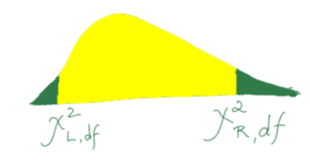
Khoảng tin cậy cho \(\sigma \) là
$$\frac{(n-1)s^2}{\chi_{R,n-1}^2}<\sigma ^2< \frac{(n-1)s^2}{\chi_{L,n-1}^2}$$
(tức là ta lấy căn của biên của khoảng tin cậy cho \(\sigma ^2\))
Quay lại với ví dụ về bánh xe: Giả sử bên nghiên cứu và phát triển của một công
ty chuyên sản xuất bánh xe hơi lấy mẫu ngẫu nhiên có cỡ mẫu là 50 từ người tiêu dùng thì
được phương sai mẫu là \(s^2=22\) km.
Như vậy, bậc tự do là \(df=49\). Ở mức tin cậy 0.05, với giá trị tới hạn bên trái
là \(\chi_{0.02,49}^2= 30.87\) và giá trị tới hạn bên phải là \(\chi_{0.98,49}^2=71.41\), ta
có khoảng tin cậy cho \(\sigma^2\) là
$$\frac{49 \times 22}{71.41}<\sigma ^2< \frac{49 \times 22}{30.87}.$$
Tức là
$$15.1 <\sigma ^2<34.92$$
Kiểm định giả thuyết: sữa đổ vào trà hay trà đổ vào sữa?
Vào một buổi chiều mùa hè năm 1920 ở Cambridge nước Anh, một nhóm cán bộ trường đại học cùng
vợ của họ và một số khách mời đang ngồi quanh một cái bàn tròn để thưởng thức trà. Trong đó, có
một người phụ nữ khẳng định rằng, Nếu trà được đổ vào sữa thì sẽ có hương vị khác với sữa đổ vào
trà. Nhiều người không tin nhưng, một người đàn ông gầy thấp với đôi kính dày bỗng hào hứng nói:
"Chúng ta kiểm định giả thiết đó thử xem!"
Thế là nhiều người khác cũng nhào vào vào cuộc vui! Họ đổ trà và sữa sao cho người phụ nữ
không nhìn thấy. Sau đó người đàn ông đeo mắt kính đưa ly đầu tiên cho người phụ nữ. Người phụ
nữ nhâm nhi một ngụm rồi nói là sữa đã được đổ vào trà. Người đàn ông ghi lại kết quả này về tiếp
tục đưa cho người phụ nữ một ly trà khác về cứ như vậy cho đến hết. Người đàn ông đó chính là
Ronald Aylmer Fisher.
Trong thí nghiệm này ta thấy rằng ngay cả khi đoán mò thì người phụ nữ cũng có 50% xác suất
đoán đúng hoặc đoán sai.
Ngay cả khi người phụ nữ đó có thể chỉ ra sự khác biệt thì người đó vẫn có thể đưa ra kết
quả không chính xác khi một trong những ghi trà không được trộn đều hoặc trà không đủ nóng khi
được pha.
Như vậy thì làm sao chúng ta biết được người phụ nữ ấy có thể năng phân biệt chè đổ vào sữa
hay sữa được đổ vào chè?
kiểm định giả thuyết thống kê là quá trình tính xác suất của điều mà chúng ta thấy được,
nếu giả thuyết mà chúng ta đang kiểm định là đúng. Khi mà xác suất của điều mà chúng ta thấy
được là thấp thì chúng ta kết luận rằng giả thuyết là sai. Lý do chúng ta làm như vậy là vì
chúng ta dựa trên nguyên tắc hợp lý cực đại: những điều đã xảy ra là những điều có xác suất
xảy ra cao nhất . Cụ thể hơn, chúng ta lấy thêm ví dụ nữa:
Thuyết tiến hóa
Thuyết tiến hóa của Darwin nói rằng các loài sinh vật thay đổi để thích ứng với tự nhiên.
Trong đó, những sinh vật có những đột biến ngẫu nhiên giúp chúng thích nghi môi trường mới tốt hơn
sẽ nhiều lợi thế sinh tồn hơn. Dần dần, những loài mới xuất hiện từ những đột biến.
Người ta đã chứng minh thuyết tiến hóa của Darwin như thế nào? Người ta chứng minh được rằng
loài người khá ổn định qua hàng ngàn năm nhờ việc so sánh phân khối của dung tích hộp sọ ở những
nghĩa trang cũ so với con người hiện tại.
Nhờ chứng minh được các chỉ số đo lường trên cơ thể của người Úc bản địa có cùng phân phối
với các chỉ số đo lường của người châu Âu người ta đã bác bỏ được luận điệu rằng một số thổ dân Úc
không phải là người.
… còn khả năng sinh tồn của sinh vật thích nghi tốt nhất thì sao?... Raphael Weldon đã
thực hiện một thí nghiệm lớn để tìm hiểu. Vào thế kỷ 18, các nhà máy Trung Quốc ở phía Nam nước Anh
đã làm nhiều dòng sông sánh đặc với đất sét. Các cảng của Plymouth và Ddartmouth thay đổi, phần
trong nhiều đất sét hơn so với phần gần biển. Weldon lấy vài trăm con cua từ các cảng này bỏ vào
lọ thủy tinh rồi đổ nước vào. Trong đó, một nửa số hũ cho nước nhiều đất sét từ các cảng bên
trong vào. Nửa còn lại thì đổ vào nước sạch hơn từ các cảng gần biển. Sau một thời gian, ông đo
mai của các con cua còn sống thì thấy rằng:
Đúng như theo thuyết của Darwin, những con cua còn sống trong hũ nhiều đất sét có chỉ số thay
đổi so với những con cua trong hũ có nước sạch hơn. Nhưng điều này liệu có chứng minh thuyết tiến
hóa?... Rất tiếc, Weldon chết trước khi hoàn thành việc phân tích.
Về sau thì người ta chứng minh được thuyết tiến hóa là đúng với nhiều sinh vật có tuổi thọ
ngắn như vi khuẩn, nhặng,… Hầu hết các nhà khoa học ngày nay đều chấp nhận tuyết tiến hóa.
Chưa có học thuyết nào khác đúng với nhiều dữ liệu thực tế như vậy.
Chúng ta có thể nghĩ tới phép kiểm định giả thuyết thống kê giống như sự kết hợp giữa nguyên tắc
ước lượng hợp lý cực đại và phương pháp chứng minh
bằng phản chứng. Để chứng minh giả thuyết \(H_0\) là sai thì đầu tiên chúng ta giả sử \(H_0\) là đúng.
Sau đó thì chúng ta sẽ suy luận ngược lại: nếu \(H_0\) là đúng thì.....và đến một lúc nào đó chúng
ta có thể sẽ thấy một điều rất vô lý (trong trong ngôn ngữ của xác suất thống kê thì điều này
được thể hiện bằng một xác suất rất thấp). Như vậy thì chúng ta có thể kết luận là \(H_0\) không
thể đúng.Cụ thể hơn:
Các bước để kiểm định giả thuyết
0. Chọn giả thuyết \(H_0\)? Ví dụ về cách chọn:
Khi mà chúng ta làm kiểm định giả thuyết để xem xét xem hai loại phân bón cái nào tốt hơn thì
chúng ta chọn giả thuyết \(H_0\) là 2 loại phân bón có tác dụng như nhau. Nhưng việc hai loại phân bón
có tác dụng như nhau không phải là điều chúng ta mong muốn. Nếu chúng ta mong muốn điều đó thì
chúng ta đã không thực hiện thí nghiệm này. Như vậy thì ta chọn \(H_0\) giống như một lâu đài cát mà
sóng muốn phá vỡ.
1. Giả sử giả thuyết \(H_0\) là đúng thì dưới giả thuyết \(H_0\), ta suy ra được ...
Khi này có 2 trường hợp có thể xảy ra:
- tìm được điều vô lý (xác suất xảy ra thấp): bác bỏ \(H_0\)
- không tìm ra được điều vô lý: không bác bỏ \(H_0\)
Để xác định xem một điều là vô lý (xác suất xảy ra thấp) đến cỡ nào,
ta định nghĩa một giá trị xác suất gọi là p-value:
p-value là xác suất mà dưới điều kiện \(H_0\) là đúng thì thống kê \(T\) mà chúng ta đang sử dụng
sẽ lọt vào chỗ tột cùng (more extreme) so với ước lượng \(\hat{T}\) mà chúng ta tính được từ dữ
liệu ta quan sát được.
Ví dụ:
- Ta muốn kiểm định \(H_0: \mu \ge \mu_0\) và \(H_1: \mu<\mu_0\))
thì \(p-value=P_{H_0}(T<\hat{T})\):
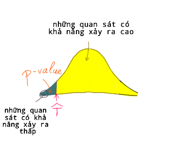
Khi sử dụng p-value để xác định xem một điều xảy ra là vô lý đến cỡ nào thì chúng ta
muốn vạch ra một mức và nếu p-value thấp hơn mức này thì có thể xem như điều xảy ra là khá
vô lý. Ta gọi mức đó là mức ý nghĩa (significant level) \(\alpha\).
Chúng ta cần chọn trước khi tiến hành thí nghiệm để tránh biased view (tức là tác động của những gì
ta thấy đến việc chọn cái ngưỡng này sau đó). Theo "truyền thống", ta thường chọn \(\alpha=0.01\) hoặc
\(0.05\) hoặc ít thường xuyên hơn là \(0.1\) .
Như vậy nếu ta chọn \(\alpha = 0.01\) và \(p-value = 0.05>\alpha \) , chúng ta sẽ không bác bỏ
\(H_0\). Nhưng nếu \(p-value = 0.005<\alpha \) thì chúng ta sẽ bác bỏ
\(H_0\).
Nếu \(p-value = 0.015\), chúng ta sẽ không bác bỏ
\(H_0\) nếu \(\alpha = 0.01\),nhưng sẽ bác bỏ \(H_0\) nếu \(\alpha = 0.05\).
Quay trở lại ví dụ về trà và sữa. Giả sử người phụ nữ đoán đúng được 8 ly trong 10 ly mà người
phụ nữ này thử. Vậy, giả sử xác suất cô ấy đoán đúng trong mỗi lần thử là \(p\), chúng ta thiết lập phép kiểm định như sau:
$$H_0:p= \frac{1}{2}$$
$$H_1: p>\frac{1}{2}$$
Với giả thuyết này thì
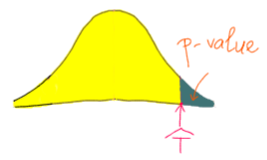
Giả sử X là số lần đoán đúng trong 10 lần thì dưới giả thuyết
\(H_0:p=\frac{1}{2}\), ta có \(X\sim Binom(10,\frac{1}{2})\).
$$p-value = P(X\ge 8|p=\frac{1}{2})\approx 0.055 $$
Như vậy, với significant-level \(\alpha = 0.05\), ta không bác bỏ giả thuyết \(H_0\), như vậy chúng ta
chưa bác bỏ được là cô này chỉ đoán được ngẫu nhiên.
Giờ ta lại thấy là mới uống có 10 lần thì ít quá. Hay là cho cô ý uống thêm rồi kiểm định lại.
Thế là cho cô ấy uống thêm 5 ly (xong chắc no nguyên ngày luôn).
Giả sử sau 5 ly này thì tổng cộng cô ý đoán được 12 ly đúng trong 15 ly.
Như vậy thì nếu X là số lần đoán đúng trong 15 lần thì dưới giả thuyết
\(H_0:p=\frac{1}{2}\), ta có \(X\sim Binom(15,\frac{1}{2})\).
$$p-value = P(X\ge 12|p=\frac{1}{2})\approx 0.018$$
Như vậy thì với significant-level \(\alpha = 0.05\), ta bác bỏ giả thuyết \(H_0\), và kết luận là
cô này thực sự có khả năng ấy!
Qua ví dụ này thì chúng ta thấy được cỡ mẫu cũng có thể ảnh hưởng khá
nhiều đến kết quả kiểm định. Trên thực tế thì không chỉ cỡ mẫu mà còn rất nhiều yếu tố khác
có thể ảnh hưởng đến kết quả kiểm định, đặc biệt là khi lấy mẫu, trong controlled-study,...
nên có một trò gọi là p-value hacking mà có mấy bác khát paper sài để được accept.
Các bạn có thể tìm hiểu về nó để tránh sai sót khi thực hiện thí nghiệm, nhưng đừng dùng
để gian lận :))
Bài tập: Một mẫu ngẫu nhiên 500 người sử dụng sản phẩm thuốc thảo mộc giúp giảm cân
trong vòng 3 tuần. Khối lượng giảm được có trung bình là \(0.5\) kg. Giả sử phương sai là \(0.3\).
Giả sử \(\mu\) là trung bình tổng thể của số cân giảm được. Để biết được phương pháp giảm cân này
có hiệu quả không, kiểm định \(H_0: \mu = 0\) và \(H_1: \mu>0\) với mức ý nghĩa
\(\alpha = 0.01\).
Kiểm định giả thuyết cho trung bình
Ở phần trước, chúng ta đã thấy rằng: Nếu chúng ta có một mẫu
\(X_1,..., X_n\;\;\underset{\sim}{i.i.d}\;\;N(\mu,\sigma ^2) \)
thì
$$\overline{X}=\frac{\sum_iX_i}{n}\sim \;\;N\left(\mu_1,\frac{\sigma ^2}{n}\right)$$
và khi n đủ lớn thì ta có thể xấp xỉ \(\frac{\overline{X}-\mu}{\sigma ^2/n}\)
bằng phân phối chuẩn \(N(0,1)\). Khi cỡ mẫu nhỏ thì ta dùng phân phối Student, vì chúng ta biết rằng
\(T=\frac{\overline{X}-\mu}{S/\sqrt{n}}\) được gọi là phân phối Student, hay phân phối t, với bậc
tự do \(n-1.\)
Ví dụ: Một công ty công bố là độ pH trong nước thải của nhà máy là 7. Bạn lấy 19
mẫu ngẫu nhiên thì nhận được trung bình mẫu là 7.2 và phương sai mẫu là 0.5. Giả sử
tống thể tuân theo phân phối chuẩn, liệu
chúng ta có thể bác bỏ giả thuyết mà công ty trên đã công bố ở mức ý nghĩa (significant
level) \(\alpha = 0.01\)?
Lời giải:
Nhiều người không thích khái niệm p-value và như đã nói ở bên trên thì chúng ta nên chọn
\(\alpha\) trước khi tiến hành thí nghiệm để tránh biased view. Trong ví dụ này, ta kiểm định
giả thuyết theo một trình tự khác cũng thường được dùng rất phổ biến. Đó là sử dụng
miền bác bỏ:
Công ty trên công bố là độ pH trong nước thải của nhà máy là 7, và chúng ta muốn bác bỏ
giả thuyết này. Do đó, các giả thuyết chúng ta có là
$$H_0: \mu=7$$
$$H_1: \mu\neq 7$$
Đây là kiểm định giả thuyết 2 phía nên
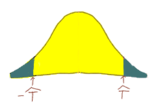
Tức là ta phải tính toán đến cả hai trường hợp: thống kê (test statistic)
lọt vào đuôi bên trái hay bên phải. Do đó,
Ta lại chú ý là diện tích đuôi bên trái bằng diện tích đuôi bên phải. Do đó,
p-value = \(2\times P(T\ge \hat{T})\) mà ta lại có được từ dữ liệu
$$\hat{T}= \frac{7.2-7}{0.5/\sqrt{19}}=1.744$$.
Do đó, p-value = \(2P(T\ge \hat{T})=2\times P(T>1.744)=0.081>\alpha.\) Do đó, ở mức ý nghĩa
\(\alpha=0.05\), ta chưa đủ bằng chứng để bác bỏ \(H_0\).
Kiểm định giả thuyết thống kê bằng cách sử dụng giá trị tới hạn
Trong cách tiếp cận này, chúng ta ấn định \(\alpha\) trước, rồi dựa vào đó để xác định
một vùng gọi là "miền bác bỏ" (critical region/rejection region)
có diện tích là \(\alpha\). Thì chúng ta tiếp tục lấy ở phần đuôi giống như p-value:
Nhưng ở đây, thay vì tính p-value, chúng ta xác định trước những phân vị \(t_{a,df}\)
là \(a-\)quantile (phân vị thứ \(a\)) của phân phối Student
với bậc tự do \(df\). Trước đây, chúng ta từng học phân vị thứ nhất, thứ hai,
thứ 3 chia dữ liệu
ra thành các phần nhất định thì ở đây phân vị thứ \(a\) cũng tương tự. Phân vị thứ \(a\)
(a-quantile) là điểm \(t_{a,df}\) sao cho \(P(T\le t_{a,df})=\alpha\) .
Để xác định giá trị của nó,ta thường tra bảng hoặc dùng máy tính (trong R,
dùng hàm qt). Và những phân vị
này xác định ranh giới giữa việc bác bỏ hoặc không bác bỏ giả thuyết thống kê, nên chúng có
tên là giá trị tới hạn (critical values) .
Ta nhìn vào vùng được tô màu trong hình trên thì nếu thống kê mà chúng ta tính được
từ mẫu rơi vào vùng này thì chúng ta sẽ bác bỏ giả thuyết
\(H_0\). Đây là phép kiểm định 2 phía và ta biết \(n=19,\alpha=0.05\). Do đó, bậc tự do là
\(n-1=18\) và giá trị tới hạn (critical values) là \(-t_{0.025,18}=-2.101\) và
\(t_{0.975,18}=2.101\). Ở đây \(t_{a,df}\) là \(a-\)quantile (phân vị thứ \(a\)) của phân phối Student
với bậc tự do \(df\).
Vùng bác bỏ là \(T<-2.101\) và \(T>2.101\).
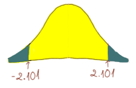
Ta lại có được từ dữ liệu
\(\hat{T}=\frac{7.2-7}{0.5/\sqrt{19}}=1.744\).
Như vậy, \(T\) không nằm trong vùng bác bỏ. Do đó, ta không có đủ bằng chứng để bác bỏ
điều mà công ty trên đã công bố.
Ta viết vắn tắt lại lời giải trên như sau:
$$H_0: \mu=7$$
$$H_1: \mu\neq 7$$
Đây là phép kiểm định 2 phía và ta biết \(n=19,\alpha=0.05\). Do đó, bậc tự do là
\(n-1=18\) và giá trị tới hạn (critical values) là \(-t_{0.025,18}=-2.101\) và
\(t_{0.975,18}=2.101\). Vùng bác bỏ là \(T<-2.101\) và \(T>2.101\).
Ta lại có được từ dữ liệu
$$\hat{T}=\frac{7.2-7}{0.5/\sqrt{19}}=1.744.$$
Như vậy, \(\hat{T}\) không nằm trong vùng bác bỏ. Do đó, ta không có đủ bằng chứng để bác bỏ
điều mà công ty trên đã công bố.
Giả sử như công ty trên, thay vì công bố là độ pH trong nước thải của nhà máy là 7, họ nói:
"độ pH trong nước thải của nhà máy cao nhất là 7. Như vậy, với dữ liệu đã thu thập
được,liệu chúng ta có thể bác bỏ giả thuyết mà công ty trên đã công bố ở mức ý nghĩa (significant
level) \(\alpha = 0.01\)?
Công ty trên công bố là độ pH trong nước thải của nhà máy cao nhất là 7, và chúng ta muốn bác bỏ
giả thuyết này. Do đó, các giả thuyết chúng ta có là
$$H_0: \mu\le 7$$
$$H_1: \mu> 7$$
Đây là phép kiểm định 1 phía
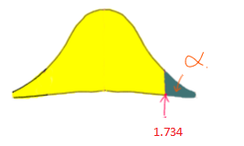
và ta biết \(n=19,\alpha=0.05\). Do đó, bậc tự do là
\(n-1=18\) và giá trị tới hạn (critical values) là \(t_{1-\alpha,18}=1.734\). Vùng bác bỏ là
\(T>1.734\).
Ta lại có được từ dữ liệu
$$\hat{T}=\frac{7.2-7}{0.5/\sqrt{19}}=1.744$$.
Như vậy, \(\hat{T}\) nằm trong vùng bác bỏ. Do đó, ta bác bỏ
điều mà công ty trên đã công bố.
Ở đây, nếu dùng hướng tiếp cận bằng p-value thì chúng ta có
p-value \(= P(T>1.744)= 0.049<0.05\) nên chúng ta bác bỏ \(H_0\)
ở mức ý nghĩa \(\alpha = 0.01.\)
Kiểm định giả thuyết cho trung bình 2 mẫu
Giả sử tôi có hai mẫu
$$X_1,..., X_m\;\;\underset{\sim}{i.i.d}\;\;N(\mu_1,\sigma ^2) $$
và
$$Y_1,...,Y_m \;\underset{\sim}{i.i.d} \;\;N(\mu_2,\sigma^2)$$.
thì
$$\overline{X}=\frac{\sum_iX_i}{m}\sim \;\;N\left(\mu_1,\frac{\sigma ^2}{m}\right)$$
độc lập với
$$\overline{Y}=\frac{\sum_iY_i}{n}\sim \;\;N\left(\mu_2,\frac{\sigma ^2}{n}\right)$$.
Áp dụng tính chất trong hộp màu hồng lần nữa ta được:
$$\overline{X}-\overline{Y}\sim \;\;N\left(\mu_1-\mu_2,\frac{\sigma ^2}{m}+\frac{\sigma ^2}{n}\right)$$
Ta viết lại được thành
$$\overline{X}-\overline{Y}\sim \;\;N\left(\mu_1-\mu_2,\sigma ^2\left(\frac{1}{m}+\frac{1}{n}\right)\right)$$
Như vậy, ta suy ra được
$$\frac{\overline{X}-\overline{Y}-(\mu_1-\mu_2)}{\sqrt{\sigma ^2\left(\frac{1}{m}+\frac{1}{n}\right)}}\sim N(0,1)$$
$$\Rightarrow z_{-\alpha/2}\le\frac{\overline{X}-\overline{Y}-(\mu_1-\mu_2)}{\sigma \sqrt{\left(\frac{1}{m}+\frac{1}{n}\right)}}\le z_{\alpha/2}$$
$$\Rightarrow \overline{X}-\overline{Y}- z_{\alpha/2}\sigma \sqrt{\frac{1}{m}+\frac{1}{n}}\le \mu_1-\mu_2\le \overline{X}-\overline{Y}+ z_{\alpha/2}\sigma\sqrt{\frac{1}{m}+\frac{1}{n}}$$
Do đó, khoảng tin cậy \(1-\alpha\) cho \(\mu_1-\mu_2\) là
$$\left[ \overline{X}-\overline{Y}- z_{\alpha/2}\sigma \sqrt{\frac{1}{m}+\frac{1}{n}}, \overline{X}-\overline{Y}+ z_{\alpha/2}\sigma\sqrt{\frac{1}{m}+\frac{1}{n}}\right]$$
Ở đây, khi cỡ mẫu là tương đối lớn, ta ước lượng \(\sigma ^2\) bằng cách sử dụng dữ liệu
từ cả hai mẫu (do 2 mẫu có cùng phương sai):
$$\hat{\sigma}^2 =s^2_{pooled}= \frac{(n_1-1)s_1^2+(n_2-1)s_2^2}{n_1+n_2-2}$$
Trường hợp \(\sigma _1^2\neq \sigma _2^2\) chúng ta suy luận tương tự.
Khi cỡ mẫu nhỏ và phải ước lượng \(\sigma^2\) thì chúng ta dùng phân phối
Student thay cho phân phối chuẩn.
Kiểm định giả thuyết và khoảng tin cậy cho tỉ lệ
Giả sử chúng ta có mô hình nhị thức (binomial) với n phép thử và xác suất thành công
trong mỗi phép thử là \(p\). Gọi X là số lần thành công trong n phép thử.
Ta ước lượng \(p\) bằng \(\hat{p}=\frac{X}{n}\).
Ta nhớ lại rằng nếu \(X\sim Binom(n,p)\) thì trong phần định lý giới hạn trung tâm,
chúng ta đã biết được rằng khi n đủ lớn:
$$z=\frac{\hat{p}-p}{\sqrt{p(1-p)/n}}\approx N(0,1)$$
Như vậy, để kiểm định giả thuyết cho \(p\), ta có thể sử dụng thống kê
$$\frac{\hat{p}-p}{\sqrt{p(1-p)/n}}$$
Khoảng tin cậy \(1-\alpha\) cho \(p\) là
$$\left[\hat{p}-z_{\alpha/2}\sqrt{p(1-p)/n}, \hat{p}+z_{\alpha/2}\sqrt{p(1-p)/n}\right]$$
Ở đây, ta đã sử dụng định lý giới hạn trung tâm để xấp xỉ. Do đó,ta phải kiểm tra những
điều kiện giống như khi ta xấp xỉ phân phối nhị thức bằng phân phối chuẩn, đó là
\(n\hat{p}\ge 5, n(1-\hat{p})\ge 5\).
Để biết được cỡ mẫu đủ lớn để đạt được độ chính xác \(1-\alpha\), ta giải phương trình
teo n tương tự như khi tìm khoảng tin cậy cho trung bình.
Ví dụ:Theo tờ "USA today" thì 5% người Mỹ đã thấy người ngoài hành tinh. Để kiểm
định xem điều này là đúng hay sai, bạn khảo sát bằng cách hỏi ngẫu nhiên 300 người. Trong
những người tham gia khảo sát thì có 7% trả lời là đã thấy. Ở mức tin cậy 1%, liệu
chúng ta có thể bác bỏ báo cáo của tờ "USA today"?
Trả lời:
Ta kiểm định \(H_0: p=0.05\) và \(H_1: p\neq 0.05\).
Để sử dụng kết quả đã bàn phía trên, trước tiên chúng ta kiểm tra điều kiện
\(n\hat{p}\ge 5, n(1-\hat{p})\ge 5\). Ta có, \(n=300\) và dưới \(H_0\) thì \(p=0.05\) .
Do đó, \(n\hat{p}=15\ge 5, n(1-\hat{p})\ge 5\), nên ta có thể sử dụng phép xấp xỉ bên trên.
Ta có \(z_{\alpha/2}=2.58\) nên vùng bác bỏ là \(z\le -2.58\) và \(z\ge 2.58\).
Lại có
$$z=\frac{\hat{p}-p}{\sqrt{p(1-p)/n}}=\frac{\hat{0.07}-0.05}{\sqrt{0.05(1-0.05)/300}}=1.59$$
Như vậy, \(z\) không nằm trong vùng bác bỏ nên ta không có đủ bằng chứng để bác bỏ \(H_0\).
Ta cũng có thể tính p-value
Ở đây, ta cũng xấp xỉ được khoảng tin cậy 0.99 cho \(p\) là
$$\left[.07-z_{0.01/2}\sqrt{0.05(1-0.05)/300}, 0.07+z_{0.01/2}\sqrt{0.05(1-0.05)/300}\right] $$
Kiểm định giả thuyết cho phương sai
Nhắc lại:
Nếu \(X_1...,X_n\) là các biến ngẫu nhiên độc lập có cùng phân phối \(N(0,1)\) thì
\(X_1^2+...+X_n^2\sim \chi_n^2\). Trong đó, \(\chi_n^2\) là phân phối Chi bình phương
với bậc tự do là n.
Nếu \(X_1...,X_n\) là các biến ngẫu nhiên độc lập có cùng phân phối \(N(0,1)\) thì
\(\frac{(n-1)s^2}{\sigma ^2}\sim \chi _{n-1}^{2}\). Trong đó, \(s^2\) là phương sai mẫu.
Chú ý mặc dù tổng \(s^2=\sum_{i=1}^n(X_i-\overline{X})^2 \) có n
thành phần nhưng bậc tự do của phân phối Chi bình phương là n-1.
Quay lại với ví dụ về bánh xe: Giả sử một công ty chuyên sản xuất bánh xe hơi muốn kiểm định xem liệu phương sai
của độ bền của bánh xe là không quá 20 km. Để làm điều này thì bên nghiên cứu và phát triển
sản phẩm lấy mẫu ngẫu nhiên có cỡ mẫu là 50 từ người tiêu dùng thì được phương sai mẫu là
\(s^2=22\) km. Ở mức tin cậy 0.05, ta kết luận như thế nào?
Trả lời: Họ muốn kiểm định xem liệu phương sai
của độ bền của bánh xe là không quá 20 km. Do đó, $$H_0: \sigma ^2\le 20$$
và $$H_1: \sigma ^2>20$$.
Đây là kiểm định đuôi bên phải (right-tailed test) với \(\alpha=0.05, n=50\).
Do đó, bậc tự do là 50-1=49. Giá trị tới hạn là \(\chi_{0.95, 49}^2=66.34\). Miền bác bỏ
là \(\chi^2>66.34\). Giá trị của thống kê mà ta tính được từ dữ liệu là
$$\chi^2 = \frac{(n-1)s^2}{\sigma ^2} = \frac{(50-1)22}{20}= 53.9<66.34$$.
Vậy, với \(\alpha = 0.01\), ta chưa đủ chứng cớ để bác bỏ \(H_0\).
Một số lưu ý quan trọng trong kiểm định giả thuyết thống kê
Bàn về p-value
P-value: Trong một thí dụ ông đưa ra có p-value nhỏ hơn hoặc bằng 0.01, Fisher nói rằng
chỉ một trong 100 giá trị sẽ sẽ vượt quá thống kê đã được tính một cách ngẫu nhiên. Do đó thì
sự khác biệt giữa các kết quả là rất đáng kể (significant).
cụm từ “đáng kể” (significant) có thể xem như một dấu hiệu báo cho chúng ta biết rằng xác
suất này đủ thấp để bác bỏ giả thuyết \(H_0\). Fisher gọi xác suất cho phép chúng ta tuyên bố đáng kể
(significant) là p-value.Ông cũng đưa ra một số ví dụ về khái niệm này.
Trong một ví dụ Ông cho thấy rằng p-value nhỏ hơn 0.01 và nói: “Chỉ một trong 100 giá trị
sẽ vượt quá thống kê đã được tính một cách ngẫu nhiên. Do đó sự khác biệt giữa các kết quả là đáng
kể.” Ông cũng từng nói rằng: “... một quan sát được xem là đáng kể (significant) nếu nó khó có thể
xảy ra nếu điều mà ta đã giả thuyết là đúng. Thông thường một kết quả có thể được xem như là đáng
kể nếu khả năng điều này xảy ra ngẫu nhiên là không quá một trong 20 phép thử (trials). Đại lượng
này tuy bất kỳ nhưng lại tiện lợi. . .” Tuy nhiên thì tùy theo ngành và tùy theo nhà phân tích mà
người ta có thể dùng significant level khác nhau để đưa ra kết luận. Do đó, trong nhiều bài báo
người ta thường ghi giá trị p-value hơn là chỉ nói bác bỏ hay không bác bỏ giả thuyết ban đầu.
Bàn về việc bác bỏ \(H_0\)
Ta gợi lại: Các bước để kiểm định giả thuyết
0. Chọn giả thuyết \(H_0\)
1. Giả sử giả thuyết \(H_0\) là đúng thì dưới giả thuyết \(H_0\), ta suy ra được ...
Khi này có 2 trường hợp có thể xảy ra:
- tìm được điều vô lý (xác suất xảy ra thấp, tức là p-value thấp): bác bỏ \(H_0\)
- không tìm ra được điều vô lý: không bác bỏ \(H_0\)
Như vậy thì việc không bác bỏ được giả thuyết \(H_0\) không hề có nghĩa là \(H_0\) đúng mà chỉ
có nghĩa là chúng ta chưa tìm được bằng chứng để bác bỏ \(H_0\). Do đó mà người ta thường lập giả
thuyết \(H_0\) là cái mà họ muốn bác bỏ!Một phép kiểm định không bác bỏ giả thuyết \(H_0\) thì không có nghĩa \(H_0\) là đúng.
Chuyện này cũng giống như chúng ta tấn công một cái pháo đài tên là \(H_0\).
Súng bắn ná không hạ được cái pháo đài (nếu ta không bác bỏ được \(H_0\)) thì ta chuyển
sang dùng súng aka. Aka không hạ được (ta không bác bỏ được \(H_0\)) thì ta chuyển sang dùng súng
thần công. Nhiều khi súng thần công mới đủ sức hạ nổi thành ( ta mới bác bỏ được giả thuyết
\(H_0\))! Còn nếu không bắn đá, bắn lửa,... vô!
Những điều đáng tranh cãi liên quan đến việc sử dụng kiểm định giả thuyết thống kê
Deming kịch liệt chỉ trích việc sử dụng kiểm định giả thiết thống kê và việc chúng được
sử dụng rộng rãi. Ông chỉ ra rằng một câu hỏi thực tiễn không thể là sự khác biệt giữa hai phương
pháp A và B là đáng kể hay không đáng kể. Đối với một sự khác biệt có sẵn nhỏ đến cỡ nào chúng
ta cũng có thể tìm ra một số lần làm thí nghiệm sao cho nó trở nên đáng kể (Given a difference.
.. however small between them...one can find a... number of repetitions of the experiment...
that will produce significance.). Cho nên sự khác biệt là đáng kể hay không thì không quan trọng!
Cái quan trọng là độ khác biệt!
Giả sử p value bằng 0.05 thì chúng ta có thể hiểu rằng khi ta lặp đi lặp lại thí nghiệm này
thật nhiều lần thì trung bình cứ 20 lần thì mới có một lần \(H_0\) không bị bác bỏ. Nhưng như
vậy thì giả sử có 20 người thực hiện một thí nghiệm độc lập với nhau. 19 người kết luận rằng
\(H_0\): " gà có trước trứng có sau" là đúng. Nhưng người thứ 20 lại có p value = 0.05, và người
này quyết định bác bỏ giả thuyết hanh, anh ta tuyên bố: " trứng có trước gà có sau". Khi đó,
bạn nghĩ thế nào?
p-value giống như bằng chứng trong xử án vậy. p-value yếu (tức là giá trị của p-value lớn) thì
sức cống hiến của nó là nhỏ. Dù nhỏ thì vẫn tốt hơn không có. p-value mạnh (tức là giá trị của p-value
thấp) thì bằng chứng này có sức cống hiến lớn hơn, nhưng nó không giúp ta chắc chắn được 100 %
là \(H_0\) đúng. Bạn cũng có thể liên tưởng điều này đến án oan vậy! Và một lần nữa xin nhấn mạnh
rằng, thống kê thì nói đến những khả năng, không phải là sự chắc chắn 100%!
Trước những bất cập của kiểm định giả thuyết như vậy thì nhiều khi, người ta sử dụng
thêm một công cụ khác, đó là "khoảng tin cậy" (confidence intervals).
Một số phép kiểm định khác chưa được đề cập ở đây:
Kiểm định Chi bình phương cho tính độc lập (Chi square test for independence)
Chi square test for goodness of fit thường được dùng để xem dữ liệu có tuân theo một
phân phối nhất định hay không
Sign test xem median có bằng m hay không
Wilcoxon signed-rank test xem 2 mẫu từ cùng một tổng thể có độc lập với nhau hay không
Wilcoxon rank sum test xem 2 mẫu độc lập có cùng phân phối hay không
Kruskal - Wallis test cho từ 3 mẫu trở lên xem các mẫu độc lập có cùng phân phối hay không
hồi quy
Ta nhớ lại từ phần hiệp phương sai và hệ số tương quan, ta có số liệu sau
X 64.00000 70.0000 75.00000 78.00000 80.00000 90.00000 101.0000 96.00000 82.00000 73.00000
Y 67.02898 72.6759 77.38556 80.34171 82.09058 91.24484 103.5563 98.39208 83.86483 73.83063
X 65.00000 70.00000 80.00000 90.000 95.00000
Y 65.31467 71.46963 81.43943 91.591 96.05272
trong đó X là lượng mưa, Y là lượng bắp và tương ứng với nó là một đồ thị phân tán
(scatter plot) như vậy:
Khi 2 biến có vẻ như có mối quan hệ tuyến tính với nhau như vậy thì ta thắc mắc: liệu từ giá trị
của biến ngẫu nhiên này, chúng ta có thể suy ra giá trị tương ứng của biến ngẫu nhiên
còn lại. Thế là chúng ta mô hình hóa như sau:
X là lượng mưa, Y là lượng
ngô thu hoạch được. Như vậy, ta muốn dự đoán Y dựa trên X, tức là Y phụ thuộc vào
X chứ X không phụ thuộc vào Y. Do đó, ta gọi X là biến độc lập và Y là
biến phụ thuộc.
Giả sử ta có n tháng và \(X_1,...,X_n\) là lượng mưa trung bình từ quý thứ nhất đến quý
thứ n; \(Y_1,...,Y_n\) là lượng ngô thu hoạch được từ quý thứ nhất đến quý thứ n, tức là
dữ liệu trông như sau:
\(X_1\)
\(X_2\)
...
\(X_n\)
\(Y_1\)
\(Y_2\)
...
\(Y_n\)
Giả sử \(\widehat{Y}_1,...,\widehat{Y}_n\) là các ước lượng mà ta dự đoán được cho \(Y_1,...,Y_n\) .
Ta muốn dùng phương pháp bình phương bé nhất, tức là ta muốn
\(\sum_{i=1}^n (\widehat{Y}_i-Y_i)^2\) là nhỏ nhất. Lý do làm như vậy thì cũng như đã
nói ở phần variance:
Ta không đánh giá bằng \(\widehat{Y}_i-Y_i\) vì \(\sum_{i=1}^n (\widehat{Y}_i-Y_i)=0\)
Ta không đánh giá bằng \(|\widehat{Y}_i-Y_i|\) vì \(\sum_{i=1}^n |\widehat{Y}_i-Y_i|\)
không khả vi để tính đạo hàm
Bình phương bé nhất nghe thì đơn giản nhưng hiệu quả đến bất ngờ. Hiệu quả của phương pháp bình phương bé nhất (least square) được thể hiện rõ khi
người ta sử dụng nó để dự đoán vị trí của một tiểu hành tinh mới được phát hiện có tên là
Ceres. Vào
1-1-1801 một nhà thiên văn học người Ý có tên là Giuseppe Piazzi đã phát hiện ra hành tinh
này và theo dõi được quỹ đạo của nó 40 ngày trước khi nó bị lóa đi bởi ánh sáng mặt trời.
Dựa vào dữ liệu này, các nhà thiên văn học muốn xác định vị trí của Ceres sau khi ta nhìn thấy
nó trở lại, nhưng họ không muốn giải những phương trình Kepler phức tạp về chuyển động của
các hành tinh và phương pháp duy nhất thành công là phương pháp least square của Gauss (lúc
này 24 tuổi). Tuy nhiên thì nó không phải là hồi quy tuyến tính đơn thuần như chúng ta bàn
ở đây.
Quay lại vấn đề chính! Chúng ta đã giả sử mối quan hệ giữa X và Y là tuyến tính, nên
ta gán cho nó dạng \(\widehat{Y}=aX+b \) giống như phương trình đường thẳng! Tuy nhiên, thường trong
thống kê, người ta viết là \(\widehat{Y}=b_0+b_1X\) . Như vậy \(\widehat{Y}_i=b_0+b_1X_i\) và ta tìm
\(b_0, b_1\) bằng cách tìm cực tiểu cho hàm mất mát (loss function):
$$Q=\sum_{i=1}^n (\widehat{Y}_i-Y_i)^2=\sum_{i=1}^n (b_0+b_1X_i-Y_i)^2$$.
Lấy đạo hàm của \(Q\) theo \(b_0,b_1\) và giải hệ phương trình ta được
Ta chú ý rằng tử số của \(b_1\) là \(\sum_i(X_i-\overline{X})(Y_i-\overline{Y})=(n-1)\widehat{Cov(X,Y)}\)
, mẫu số
\(\sum_i(X_i-\overline{X})^2=(n-1)\widehat{Var(X)}\) . Điều này làm ta liên tưởng đến
\(\hat{\rho}_{X,Y}=\frac{\widehat{Cov(X,Y)}}{\sqrt{\widehat{Var(X)}\widehat{Var(Y)}}}\) .
Và một lần nữa, chúng ta nhắc lại rằng "tương quan chỉ có ý nghĩa trong trường hợp tuyến
tính". Tương quan bằng 0 không có nghĩa là 2 biến ngẫu nhiên không liên quan gì đến nhau
(chúng có thể có quan hệ phi tuyến tính)!
Đồng thời, ta cũng có công thức sau giúp chúng ta tính toán nhanh hơn:
Sau khi ước lượng, dự đoán xong, chúng ta muốn xem lại xem chúng ta ước lượng tốt thế nào
cả về tổng quan lẫn chi tiết. Về tổng quan, chúng ta đã có \(Q=\sum_{i=1}^n (\widehat{Y}_i-Y_i)^2\) .
Về chi tiết thì chúng ta sẽ vẽ \(e_i=\widehat{Y}_i-Y_i\) theo \(\widehat{Y}_i\) . Đồ thị này gọi là residual plot.
\(e_i\) ở đây
là ước lượng cho \(\epsilon_i\) trong mô hình \(Y=\beta_0+\beta_1X+\epsilon\) (và \(b_0,b_1\)
lần lượt là ước lượng cho \(\beta_0,\beta_1\) ). Trong mô hình hồi quy thông thường
(normal linear regression), người ta
thường giả sử \(\epsilon_1,.., \epsilon_n \;\underset{\sim}{i.i.d.}\; N(0,1)\) và gọi là white noise
(nhiễu trắng). Khi đó, các điểm \((e_i,\widehat{Y}_i)\) nên dao động ngẫu nhiên quanh đường thẳng
\(e_i=0\) và không nên có một cái xu hướng (trend) nào trên đồ thị. Mô hình của chúng ta thỏa mãn
điều này:
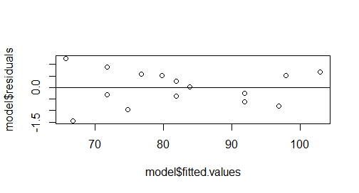
Thêm vào đó, chúng ta nên kiểm tra xem: nếu điều kiện tuân theo phân phối chuẩn được
thỏa thì residuals nên có phân phối chuẩn. Ta có thể kiểm tra điều này bằng
normality plot (quantile-to-quantile plot cho phân phối chuẩn).
Nếu các điểm trên normality plot thẳng hàng thì residuals tuân theo phân phối chuẩn.
Mô hình của chúng ta thỏa mãn
điều này:
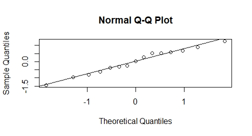
R Code
x=c(64,70,75,78,80,90,101,96,82,73,65,70,80,90,95) #khởi tạo số lượng mưa giả
y = 2+x+rnorm(length(x)) # khởi tạo số liệu bắp dựa trên số liệu mưa
plot(x,y, col='red',xlab = 'rain',ylab = 'corn')
model <- lm(y~x)
summary(model)
plot(model$fitted.values,model$residuals)
abline(0,0)
qqnorm(model$residuals)
qqline(model$residuals)
Sử dụng phép biến đổi (transformation)
Không phải khi nào các điều kiện: tuyến tính, phương sai là hằng số,
tuân theo phân phối chuẩn cũng được thỏa mãn. Khi đó, ta có thể biến đổi (transform X, Y hoặc
cả hai).
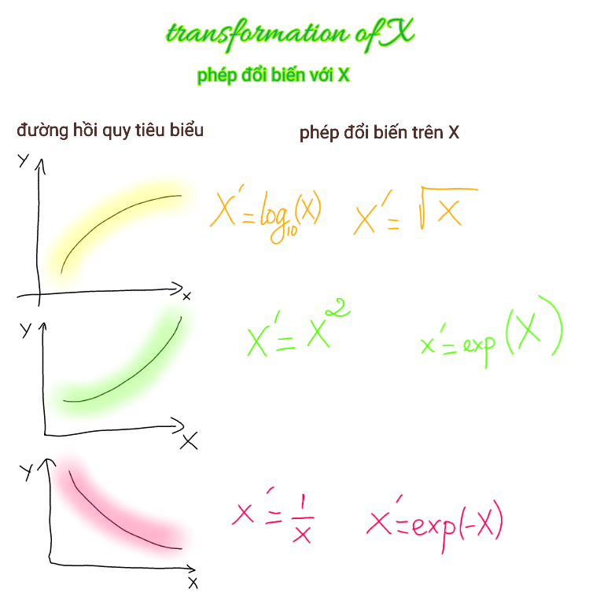
Tại sao lại đổi biến như vậy và tại sao trong trường hợp này, ta biến đổi X chứ không biến đổi
Y thì ta có thể liên tưởng đến hàm số thông thường. Ví dụ như
hình thứ nhất ở trong 3 cái bên trên: Giả sử
ta có hàm \(y=f(x)=x^2\). Như vậy thì \(x=\sqrt{y}\) Khi đó, nếu ta đặt \(z=\sqrt{y}\)
thì ta có đường thẳng \(z=x\). Dĩ nhiên, đường hồi quy không nhất thiết có dạng như vậy
nhưng mà phép biến đổi như vậy nó giúp giảm độ cong, cho
đường hồi quy thẳng hơn.
Nếu một số giá trị của X là gần 0 mà ta lại cần phép biến đổi
nghịch đảo thì ta có thể cộng thêm hằng số vào mẫu, tức là thực hiện phép biến đổi
\(X'=\frac{1}{X+k}\) với k là hằng số ta chọn.
Khi nhìn vào hình sau, các bạn chú ý phần màu ống loe. Đây chính là khi chúng ta thực hiện
phép biến đổi trên Y.
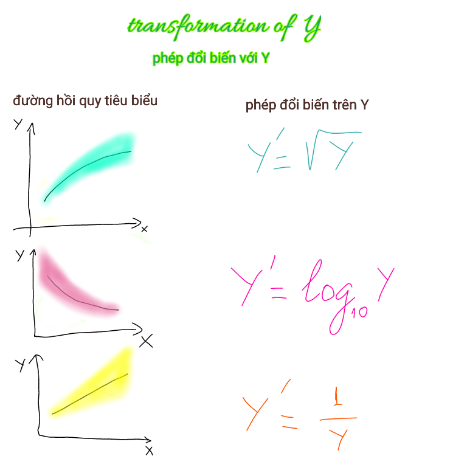
Để hiểu nguyên nhân biến đổi như vậy, chúng ta tưởng tượng là ta hoán đổi X,Y và liên tưởng
lại như ở mục phép biến đổi với X.
Đôi khi, chúng ta muốn sử dụng phép biến đổi \(\log\) mà có một số
giá trị của Y là âm. Khi đó, chúng ta cộng Y với một hằng số k để cho hết âm, tức là
thực hiện phép biến đổi \(Y'=\log_{10}(Y+k)\) với k là hằng số mà chúng ta chọn.
Ngoài những phép biến đổi cơ bản trên ra, phép biến đổi Box-Cox (Box-Cox transformation)
cũng được sử dụng khá phổ biến. Tuy nhiên, nó nằm ngoài phạm vi của cuốn sách này.
Một số mô hình hồi quy khác
Hồi quy đa thức (polynomial regression)
Nếu ta có mô hình \(y=\beta_0+\beta_1 x\) thì ta cũng có thể
có mô hình \(y=\beta_0+\beta_1 x+\beta_2 x^2 \) hay
\(y=\beta_0+\beta_1 x +\beta_2 x^2+\beta_3 x^3\) hay
phương trình có bậc cao hơn. Tuy nhiên, chúng ta cần chú ý đến việc overfitting, tức là sai số
trên tập dữ liệu mà chúng ta mô hình hóa (training set) thì thấp nhưng sai số trên dữ liệu ngoài
tập dữ liệu này lại cao. Thêm vào đó, qua n điểm, ta luôn có thể tìm được một phương trình
bậc n đi qua n điểm này. Chung quy lại, trước khi quyết định thử mô hình nào, chúng ta nên vẽ
đồ thị phân tán (scatter plot) trước để có một cái nhìn trực quan về dữ liệu.
Least absolute deviation regression
Trong phương pháp hồi quy tuyến tính thông thường, chúng ta
tìm cực tiểu của \(\sum_i(Y_i-a-bX_i)^2\) thay vì dùng \(\sum_i|Y_i-a-bX_i|\). Tuy nhiên, trong
Least absolute deviation regression, ta đi tìm cực tiểu của \(\sum_i|Y_i-a-bX_i|\). Chuyện này
phức tạp hơn và cần phải sử dụng linear programming. Ta có thể thực hiện điều này trong R
bằng cách sử dụng gói lệnh quantreg. Phương pháp này có những lợi điểm sau:
- Giảm ảnh hưởng của outlier
- (Y|X=x) (là một biến ngẫu nhiên) có đuôi dài
- (Y|X=x) không đối xứng và chúng ta muốn ước lượng median thay cho trung bình.
Tuy nhiên, khi sử dụng phương pháp này, chúng ta cần
để ý xem ước lượng có ổn định (stable) hay không (không ổn định (unstable) có nghĩa là một chút
thay đổi trong dữ liệu có thể làm cho giá trị của các ước lượng thay đổi nhiều).
Quantile regression
Lưu ý rằng mô hình \(Y=\beta_0+\beta_1X+\epsilon\) cho ta \(E(Y)=E(\beta_0+\beta_1X+\epsilon)=\beta_0+\beta_1X\)
(vì \(\beta_0,\beta_1,X\) là các hằng số và \(\epsilon\) có kỳ vọng bằng 0). Như vậy, chúng ta đi ước lượng trung bình.
Tuy nhiên, nhiều khi chúng ta muốn dự đoán những extreme value hơn. Chẳng hạn, khi ta muốn dự đoán những người có thu
nhập ở dưới mức nghèo, khi ta muốn ước lượng số loài bị tuyệt chủng trong một vụ tràn dầu trên biển, khi một công ty
mỹ phẩm muốn cho ra một mặt hàng xa xỉ thì họ muốn biết tỉ lệ người dân có thể quan tâm và có đủ tiền để mua sản phẩm đó,...
Bạn đọc có thể tìm hiểu thêm trên mạng hoặc/và mục quantile regression trong chương 11 của Common Errors in Statistics
and how to avoid them.
Error-in-variables regression
Đây là mô hình cho phép chúng ta xem xét cả sai số trong dự đoán biến phụ thuộc lẫn sai số khi đo lường biến độc lập..
Mô hình có dạng như sau:
$$Y_i=\beta_0+\beta_1X_i^*+\epsilon\;\;\; i =1,...,n$$
Trong đó, \(X^*\) là biến độc lập mà chúng ta không quan sát được (unobserved regressor). Thay vào đó,
cái mà chúng ta quan sát được là
$$X_i=X_i^*+\eta_i\;\;\; i =1,...,n$$
Trong đó, ta giả sử sai số \(\eta_i\) là độc lập với \(X_i^*\).
Xem thêm trên Wikipedia.
Piecewise regression
phương pháp này có ý tưởng cơ bản là phân mảnh dữ liệu ra và
thực hiện hồi quy trên từng phần nhỏ. Xem thêm trên
psu online course
Hồi quy logistic
Khi Y chỉ nhận 1 trong 2 giá trị là 0 hoặc 1.
Xem thêm Khi nhắc tới white noise (nhiễu trắng), ta thường nghĩ là chả có gì hay ho, nhưng
thực ra nó cũng có một ứng dụng khá thú vị được gọi là dội lại ngẫu nhiên
(Stochastic resonance).. Khi mà tín hiệu quá yếu để có thể được dò ra bởi sensor, ta có thể làm nó lớn hơn
bằng cách thêm nhiễu (white noise) gồm một quang phổ có độ rộng lớn với nhiều tần số.
Những tần số trong nhiễu tương ứng với những tần số trong tín hiệu gốc sẽ va dội vào nhau,
khiến cho tín hiệu gốc trở nên to hơn mà không làm nhiễu trở nên lớn hơn, và từ đó, tỉ lệ
giữa tín hiệu gốc và nhiễu trở nên lớn hơn. Thêm vào đó, khi này tín hiệu có thể đủ lớn
để sensor có thể dò ra được. Sau đó, ta có thể lọc nhiễu để lấy tín hiệu gốc.
Tài liệu tham khảo
- Applied Linear Statistical Models 5th Edition,
Michael Kutner, Christopher Nachtsheim, John Neter, William Li.
-Chances Are . . .: Adventures in Probability,
Kaplan, Michael
-Common Errors in Statistics
Good, Phillip I.
-
Duelling Idiots and Other Probability Puzzlers,
Nahin, Paul J.
- Elementary Statistics,
Weiss, Neil A.
- Elementary Statistics: Picturing the World,
Larson, Ron
-
Errors, Blunders, and Lies: How to Tell the Difference,
Salsburg, David
- How Not to Be Wrong: The Power of Mathematical Thinking,
Ellenberg, Jordan
-
How to Lie with Statistics,
Huff, Darrell
-
Probability with Martingales,
Williams, David
-
Lady Luck: The Theory of Probability
Weaver, Warren
- Nhập môn hiện đại xác suất & thống kê, Nguyễn Tiến Dũng, Đỗ Đức Thái
-
The Lady Tasting Tea: How Statistics Revolutionized Science in the Twentieth Century,
Salsburg, David
-The Probability of God: A Simple Calculation That Proves the Ultimate Truth,
Unwin, Stephen D.
-The Signal and the Noise: Why So Many Predictions Fail - But Some Don't, Silver, Nate
- The Intelligent Investor, Benjamin Graham, Jason Zweig (Contributor), Warren Buffett (Contributor)
- Statistics for the Life Sciences,
Samuels, Myra L.
-
Toyota Kata: Managing People for Improvement, Adaptiveness and Superior Results,
Rother, Mike -
Understanding Probability: Chance Rules in Everyday Life, Henk Tijms
- Wikipedia: Stochastic resonance, p-value, normal distribution, exponential distribution,
law of large number, central limit theorem, phân phối Poisson, phân phối mũ.
-Zinck, Richard D., and Volker Grimm. "Unifying wildfire models from ecology
and statistical physics."
The American Naturalist 174.5 (2009): E170-E185.